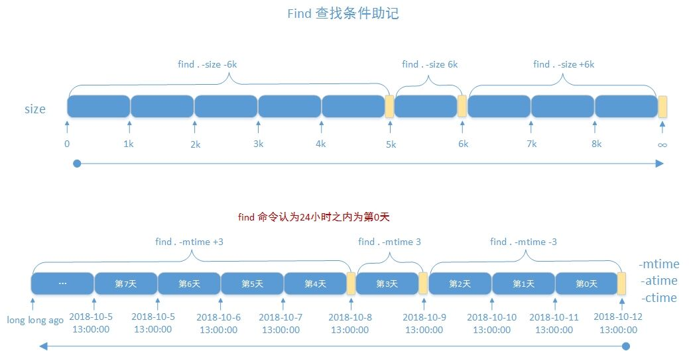
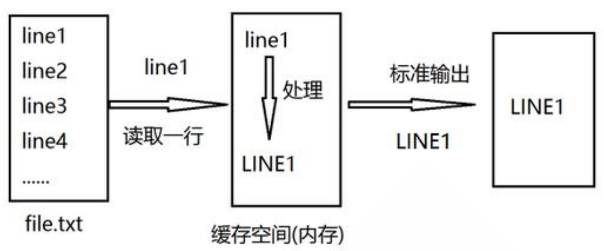
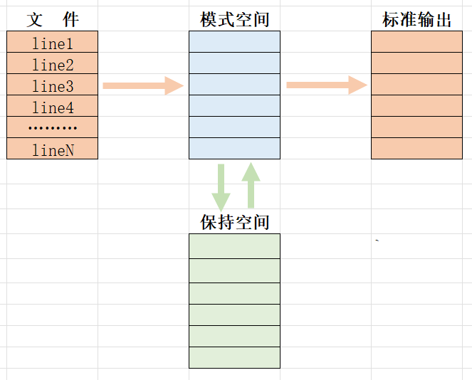
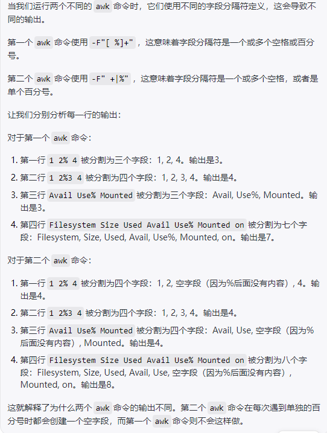
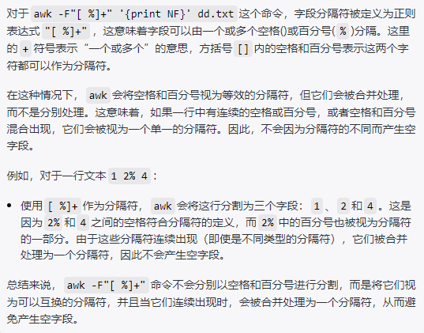

1 文件通配符 匹配文件名的字符串
用来匹配符合条件的多个文件，方便批量管理文件
通配符采用特定的符号，表示特定的含义，此特定符号称为元 meta 字符
常见通配符
范例
范例
1 2 3 ls ??? ls ??? -d ls ???.conf
范例
范例
1 2 3 4 5 6 [root@centos7 etc]#ls [cfg].* ls : cannot access [cfg].*: No such file or directory[root@centos7 etc]#ls [cgf]*.* chrony.conf chrony.keys cron.deny csh.cshrc csh.login favicon.png fstab.log fuse.conf grub2.cfg
范例：匹配etc目录及其所有子目录下的所有以c开头的文件
1 2 3 4 5 6 7 [root@centos7 ~]#ls /etc/**/c* /etc/libnl/classid /etc/pam.d/crond /etc/profile.d/csh.local /etc/sysconfig/chronyd /etc/logrotate.d/chrony /etc/postfix/canonical /etc/python/cert-verification.cfg /etc/sysconfig/cpupower /etc/my.cnf.d/client.cnf /etc/profile.d/colorgrep.csh /etc/security/chroot.conf /etc/sysconfig/crond /etc/pam.d/chfn /etc/profile.d/colorgrep.sh /etc/security/console.handlers /etc/systemd/coredump.conf /etc/pam.d/chsh /etc/profile.d/colorls.csh /etc/security/console.perms /etc/pam.d/config-util /etc/profile.d/colorls.sh /etc/selinux/config
[] 匹配字符
1 2 3 4 5 6 7 8 9 10 11 12 13 14 15 16 17 18 [0-9] [a-z] [A-Z] [wang] [^wang] [^a-z] [:digit:] [:lower:] [:upper:] [:alpha:] [:alnum:] [:blank:] [:space:] [:punct:] [:print :] [:cntrl:] [:graph:] [:xdigit:]
特殊字符之 “-”
1 2 3 4 5 6 7 “[1-3]” —— 表示1到5中的任意一个字符，所以“<H[1-3]>”表示“<H1>”、“<H2>”或者“<H3>” “[d-g]” —— 表示“d”、“e”、“f”或者“g” “1-[1-3]” —— 表示“1-1”、“1-2”或者“1-3” “1[-1]” —— 表示“1-”或者“11”
范例：
1 2 3 4 5 6 7 8 9 10 11 12 13 14 ls /data/[wang].txt ls /data/[c-h].txt ls /data/[ ^wang].txt ls /data/[wang1-3].txt ls /data/[a-d].txt ls /data/[[:lower:]].txt ls /data/[[:upper:]].txt ls /data/[[:alpha:]].txt ls /data/[[:alnum:]].txt
范例：比较有无*的功能区别
1 2 3 4 5 ls * ls -a * ls -a ls .* ls -d .*
范例
1 2 3 4 5 6 7 8 9 10 11 12 [root@centos7 data]#ls -a . .. a2.txt ab.log a.txt.orig backup2023-08-16 scripts [root@centos7 data]#ls -a * a2.txt ab.log a.txt.orig backup2023-08-16: . .. etc scripts: . chess.sh date.sh hello.sh ip.sh nginx.sh num_sort.sh sum.sh text3.sh t.sh user.sh .. color.sh first.sh hosts.txt nginx_install.sh num_add.sh ping.sh text2.sh text.sh useradd.sh var.sh
范例
1 2 3 4 5 6 [root@centos8 data]#touch file*.log [root@centos8 data]#touch file1.log [root@centos8 data]#ls file*.log file1.log 'file*.log' [root@centos8 data]#ls 'file*.log' 'file*.log'
2 CRUD文件和目录 2.1 目录操作 2.1.1 显示当前工作目录 每个shell和系统进程都有一个当前的工作目录 CWD：current work directory
显示当前shell CWD的绝对路径
pwd命令: printing working directory
-P 显示真实物理路径
-L 显示链接路径（默认）
2.1.2 绝对和相对路径 （1）绝对路径
以/即根目录开始，打出完整的文件位置路径
完整的文件的位置路径
可用于任何想指定一个文件名的时候
1 2 [root@centos7 ~]#ls /etc/sysconfig/network-scripts/ifcfg-eth0 /etc/sysconfig/network-scripts/ifcfg-eth0
（2）相对路径
不以/开头，先以cd切换到了一个目录，再想访问其目录下的子目录的话，可以直接打出文件名，相对于当前目录的路径
1 2 3 [root@centos7 ~]#cd /etc/sysconfig/ [root@centos7 sysconfig]#ls network-scripts/ifcfg-eth0 network-scripts/ifcfg-eth0
（3）basename
只取文件名不要路径
1 2 [root@centos7 sysconfig]#basename /etc/sysconfig/network-scripts/ifcfg-eth0 ifcfg-eth0
（4）dirname
只取路径不要文件名
1 2 [root@centos7 sysconfig]#dirname /etc/sysconfig/network-scripts/ifcfg-eth0 /etc/sysconfig/network-scripts
2.1.3 更改目录 1 2 3 4 5 6 7 8 9 10 cd [-L|[-P [-e]] [-@]] [dir ]-L -P cd .. cd - cd | cd ~ cd ~username cd path
2.1.4 列出目录内容 1 2 3 4 5 6 7 8 9 10 11 12 13 14 15 16 17 18 19 20 ls （简略列出）-l -a -d -S -R -t -u -U -X -F -C -l --time =atime -l --time =ctime -l --time =mtime ll （详细列出） -a -d !*
说明：
ls 查看不同后缀文件时的颜色由 /etc/DIR_COLORS 和@LS_COLORS变量定义
ls -l 看到文件的大小，不一定是实际文件真正占用空间的大小
ll 是 ls命令的一个别名，在centos 和 ubuntu 系统中，该别名的参数不一样
1 2 3 4 5 [root@rocky86 ~]# alias ll alias ll='ls -l --color=auto' root@ubuntu20:~# alias ll alias ll='ls -alF'
范例
1 2 3 4 5 6 7 8 9 10 11 12 13 14 15 16 [root@centos8 ~]#vim /etc/DIR_COLORS .jpg 01;31 [root@centos8 ~]#exit [root@centos8 ~]#echo $LS_COLORS .... [root@ubuntu2204 ~]# ls /etc/DIR_COLORS ls : cannot access '/etc/DIR_COLORS' : No such file or directory[root@ubuntu2204 ~]# dircolors -p ...
2.1.5 查看目录结构 1 2 3 4 5 6 7 8 9 10 11 12 13 14 15 16 17 18 19 tree [-acdfghilnpqrstuvxACDFJQNSUX] [-H baseHREF] [-T title ] -a -d -f -F -g -u -p -s -i -n -t -r -D -C -L n -P pattern -o filename
范例
1 2 3 4 5 6 7 [root@ubuntu2204 ~]# tree [root@ubuntu2204 ~]# tree dir1/ [root@ubuntu2204 ~]# tree -d -L 2 /
2.1.6 创建目录 1 2 3 4 5 6 mkdir [OPTION]... DIRECTORY...-m|--mode -p|--parents -v|--verbose
范例
1 2 3 4 5 6 7 8 [root@ubuntu2204 ~]#mkdir /data/dir1 [root@ubuntu2204 ~]#mkdir /data/dir1/dir2/dir3/dir4 [root@ubuntu2204 ~]# mkdir -m=777 dirb
2.1.7 删除空目录 rmdir只能删除空目录，如果想删除非空目录，可以使用rm -r 命令，递归删除目录树
1 2 3 4 5 6 rmdir [OPTION]... DIRECTORY...--ignore-fail-on-non-empty -p|--parents -v|--verbose
范例：从外层开始创建，从里层开始删除
1 2 3 4 5 6 7 8 9 10 11 [root@ubuntu2204 ~]# mkdir -pv a/b/c/d mkdir : created directory 'a' mkdir : created directory 'a/b' mkdir : created directory 'a/b/c' mkdir : created directory 'a/b/c/d' [root@ubuntu2204 ~]# rmdir -pv a/b/c/d rmdir : removing directory, 'a/b/c/d' rmdir : removing directory, 'a/b/c' rmdir : removing directory, 'a/b' rmdir : removing directory, 'a'
范例
1 2 [root@ubuntu2204 ~]#rmdir /data/dir1/dir2/dir3/dir4
2.2 文件操作 2.2.1 查看文件状态 一个文件有两部份信息：元数据和具体内容
查看文件元数据
1 2 3 4 5 6 7 stat [OPTION]... FILE...可以一键全部显示atime ctime mtime -t|--terse -f|--file-system -c|--format
范例
1 2 3 4 5 6 7 8 9 10 11 [root@ubuntu2204 ~]# stat -f /etc/fstab File: "/etc/fstab" ID: 55a3efb585efc96c Namelen: 255 Type: ext2/ext3 Block size: 4096 Fundamental block size: 4096 Blocks: Total: 25397502 Free: 23933766 Available: 22632109 Inodes: Total: 6488064 Free: 6395997 [root@ubuntu2204 ~]# stat -c "%a-%i-%n" /etc/fstab 644-3277488-/etc/fstab
2.2.2 判断文件是什么类型 文件可以包含多种类型的数据，使用file命令检查文件的类型，然后确定适当的打开命令或应用程序使用
1 2 3 4 5 6 7 file [options] <filename>... -b|--brief -f|--files-from FILE -F|--separator STRING -L|--dereference
范例：windows的文本格式和Linux的文本格式的区别
1 2 3 4 5 6 7 8 9 10 11 12 13 14 15 16 17 18 19 20 21 22 23 24 25 26 27 28 29 [root@ubuntu2204 ~]# cat linux.txt a b c [root@ubuntu2204 ~]# cat win.txt a b c [root@ubuntu2204 ~]# file linux.txt win.txt linux.txt: ASCII text win.txt: ASCII text, with CRLF line terminators [root@ubuntu2204 ~]# apt install dos2unix [root@ubuntu2204 ~]# dos2unix win.txt dos2unix: converting file win.txt to Unix format... [root@ubuntu2204 ~]# file win.txt win.txt: ASCII text [root@ubuntu2204 ~]# unix2dos win.txt unix2dos: converting file win.txt to DOS format... [root@ubuntu2204 ~]# file win.txt win.txt: ASCII text, with CRLF line terminators
范例：转换文件字符集编码
1 2 3 4 5 6 7 8 9 10 11 12 13 14 15 16 17 18 19 20 21 22 23 24 25 26 27 28 29 [root@centos8 ~]#iconv -l [root@centos8 data]#file windows.txt windows.txt: ISO-8859 text, with no line terminators [root@centos8 data]#echo $LANG en_US.UTF-8 [root@centos8 data]#cat windows.txt ▒▒▒▒▒▒[root@centos8 data]# [root@centos8 data]#iconv -f gb2312 windows.txt -o windows1.txt [root@centos8 data]#cat windows1.txt 马哥教育[root@centos8 data]#ll windows1.txt -rw-r--r-- 1 root root 12 Mar 23 10:13 windows1.txt [root@centos8 data]#file windows1.txt windows1.txt: UTF-8 Unicode text, with no line terminators [root@centos8 data]#iconv -f utf8 -t gb2312 windows1.txt -o windows2.txt [root@centos8 data]#file windows2.txt windows2.txt: ISO-8859 text, with no line terminators
2.2.3 创建空文件和刷新时间 touch命令可以用来创建空文件或刷新文件的时间，如果创建的文件已经存在，那么将会刷新三个时间戳
1 2 3 4 5 6 touch [OPTION]... FILE...-a -m -t [[CC]YY]MMDDhhmm[.ss] -c
范例
1 2 3 4 5 6 7 [root@centos8 data]#touch `date -d "-1 day" +%F_%T`.log [root@centos8 data]#ls 2019-12-12_16:11:48.log [root@centos8 data]#touch $(date -d "1 year" +%F_%T).log [root@centos8 data]#ls 2019-12-12_16:11:48.log 2020-12-13_16:13:11.log
2.2.4 复制文件和目录 1 2 3 4 5 6 7 8 9 10 11 12 13 14 15 16 17 18 19 20 21 22 cp [OPTION]... source ... directorycp [OPTION]... -t DIRECTORY SOURCE...-i -n -a -b -r -v -d -f -u --backup=numbered --preserve[=ATTR_LIST] -p mode ownership timestamp links xattr context all
源目标 不存在 存在且为文件 存在且为目录
一个文件
新建DEST，并将SRC中内容填充至DEST中
将SRC中的内容覆盖至DEST中，注意数据丢失风险！ 建议用 –i 选项
在DEST下新建与原文件同名的文件，并将SRC中内容填充至新文件中
多个文件
提示错误
提示错误
在DEST下新建与原文件同名的文件，并将原文件内容复制进新文件中
目录须使用-r选项
创建指定DEST同名目录，复制SRC目录中所有文件至DEST下
提示错误
在DEST下新建与原目录同名的目录，并将SRC中内容复制至新目录中
范例
1 2 3 4 5 6 7 8 9 10 11 12 13 14 15 16 17 18 19 20 21 22 23 24 25 26 27 28 [root@ubuntu2204 ~]# cp -p ~wang/issue /data/issue_wang2.bak [root@ubuntu2204 ~]# cp /etc/sysconfig/ /data/ cp : -r not specified; omitting directory '/etc/sysconfig/' [root@ubuntu2204 ~]# cp -r /etc/sysconfig/ /data/ [root@ubuntu2204 ~]# cp /dev/zero{,.bak} [root@ubuntu2204 0508]# cp --backup=numbered x.log y.log [root@ubuntu2204 0508]# ls x.log y.log y.log.~1~ [root@ubuntu2204 0508]# cp --backup=numbered x.log y.log [root@ubuntu2204 0508]# ls x.log y.log y.log.~1~ y.log.~2~ [root@ubuntu2004 ~]#cp -r /etc/ /opt/bak [root@ubuntu2004 ~]#ls /opt/ bak [root@ubuntu2004 ~]#cp -r /etc/ /opt/bak [root@ubuntu2004 ~]#ls /opt/bak/ | grep etc etc [root@ubuntu2004 ~]#ls /opt/bak/etc ......
2.2.5 移动文件和重命名文件 mv 命令可以实现文件或目录的移动和改名
同一分区移动数据，速度很快，数据位置没有变化
不同分区移动数据，速度相对慢，数据位置发生了变化
1 2 3 4 5 6 7 8 9 10 11 12 mv [OPTION]... [-T] SOURCE DESTmv [OPTION]... SOURCE... DIRECTORYmv [OPTION]... -t DIRECTORY SOURCE...-b -n -i -u -v -f -t distory
范例
1 2 3 4 5 6 7 8 9 10 11 12 13 14 15 16 17 mv 0.txt /opt/ mv 1.txt 11.txt mv ls ls.mp3[root@rocky86 ~]# mv abc/ abcd [root@rocky86 ~]# mv abc/* . [root@rocky86 ~]# mv a b c d abcd/
利用 rename 可以批量修改文件名
1 2 3 4 5 6 7 rename [options] <expression> <replacement> <file>... -v|--verbose -s|--symlink -n|--no-act -o|--no-overwrite
范例
1 2 3 4 5 6 7 8 9 10 11 12 13 14 [root@rocky86 ~]#rename txt txt.orig *.txt [root@rocky86 ~]#rename 'conf' 'conf.bak' f* [root@rocky86 ~]#rename '.bak' '' *.bak [root@rocky86 ~]# rename -v txt log *.txt [root@rocky86 ~]# rename -s abc xyz abc.link
2.2.6 删除文件 使用 rm 命令可以删除文件和目录
注意：此命令非常危险，慎重使用，建议使用 mv 代替 rm
1 2 3 4 5 6 7 8 rm [OPTION]... [FILE]...-i -f -r|-R -d --no-preserve-root
由于rm命令比较危险，可以设置别名，将删除的东西放进垃圾箱
1 alias rm='DIR=/data/backup`date +%F%T`;mkdir $DIR;mv -t $DIR'
或者用trash-put命令执行删除，删除的文件可以恢复，删除的文件默认在 ~/.local/share/Trash/files
范例：删除特殊文件
1 2 3 4 5 6 7 8 9 10 11 12 13 14 15 16 17 18 19 20 21 22 23 24 25 26 27 28 29 30 31 32 33 34 35 [root@ubuntu2204 0508]# ls -f [root@ubuntu2204 0508]# rm -f [root@ubuntu2204 0508]# ls -f [root@ubuntu2204 0508]# rm -rf -f [root@ubuntu2204 0508]# ls -f [root@ubuntu2204 0508]# rm -rf * [root@ubuntu2204 0508]# ls -f [root@ubuntu2204 0508]#rm -rf ./-f [root@ubuntu2204 0508]# ls [root@ubuntu2204 0508]# rm -- -f [root@ubuntu2204 0508]# ls [root@ubuntu2204 0508]# touch '~' [root@ubuntu2204 0508]# ls '~' [root@ubuntu2204 0508]# rm -f ~ rm : cannot remove '/root' : Is a directory[root@ubuntu2204 0508]# rm -- ~ rm : cannot remove '/root' : Is a directory[root@ubuntu2204 0508]# rm -f ./~
范例：删除大文件
1 cat /dev/null > /var/log/huge.log
2.2.7 读取文件 1 2 3 4 5 tail [OPTION]... [FILE]...-f 循环读取 -q 不显示处理信息 -v 显示详细的处理信息
2.2.8 快速删除一个大文件 在大多数文件系统中，当你使用 rm 命令删除一个文件时，实际上被删除的是文件的目录项和对文件数据块的引用计数。也就是说，文件系统会移除指向该文件的数据块的指针，并将这些数据块标记为可用空间。然而，实际的数据块内容并没有立刻从磁盘上物理地擦除。
由于数据块只是被标记为“可重用”，而没有真正清零或覆盖，因此如果新的数据尚未写入这些块，那么原先的数据仍然存在于磁盘上。这意味着，在一定条件下（例如通过专门的数据恢复工具），这些数据是可以被恢复的。
有时，文件特别特别的大，或者磁盘IO繁忙，你直接用 rm -rf 删除的话会非常慢，进而影响其他进程的正常运行。如何处理呢？思路就在于inode块上，inode中存着文件的元数据（例如，文件大小、所有者ID、组ID、文件权限、时间戳等）
1 truncate -s 0 /path/to/your/large/file
truncate命令工作时，会直接修改inode中记录的文件大小，将其设置为0，而并不会去触及到文件内容所在的数据块。所以磁盘IO消耗极小，速度极快。设为0之后，你再用rm命令把这这个空文件删掉就可以了
3 文件查找和压缩 3.1 文件查找工具 3.1.1 locate
locate 查询系统上预建的文件索引数据库 /var/lib/mlocate/mlocate.db
索引的构建是在系统较为空闲时自动进行(周期性任务)，执行updatedb可以更新数据库
索引构建过程需要遍历整个根文件系统，很消耗资源
locate和updatedb命令来自于mlocate包
搜索之前先用updatedb更新一下数据库
工作特点:
查找速度快
模糊查找
非实时查找，适合查找静止的文件
搜索的是文件的全路径，不仅仅是文件名
可能只搜索用户具备读取和执行权限的目录
1 2 3 4 5 6 7 8 9 10 locate [OPTION]... [PATTERN]... -i -n N -r --regex -A -b -c -d
范例
1 2 3 4 5 6 7 8 locate conf locate -r '\.conf$' locate /etc/a locate -d /tmp/nofile conf
3.1.2 find find 是实时查找工具，通过遍历指定路径完成文件查找
工作特点：
查找速度略慢
精确查找
实时查找
查找条件丰富
可能只搜索用户具备读取和执行权限的目录
1 find [OPTION]... [查找路径] [查找条件] [处理动作]
3.1.2.1 指定搜索目录层级 1 2 -maxdepth level 最大搜索目录深度,指定目录下的文件为第1级 -mindepth level 最小搜索目录深度
范例
1 2 3 4 5 6 [root@ubuntu2204 ~]# find /etc/ -maxdepth 2 [root@ubuntu2204 ~]# find /etc/ -mindepth 2 [root@ubuntu2204 ~]# find /etc/ -maxdepth 2 -mindepth 2
3.1.2.2 对每个目录先处理目录内的文件，再处理目录本身 范例
1 2 3 4 5 6 7 8 9 10 11 12 13 14 15 16 [root@centos8 data]#find /data/test /data/test /data/test/f1.txt /data/test/f2.txt /data/test/test2 /data/test/test2/test3 /data/test/test2/test3/f3.txt /data/test/test2/test3/f4.txt [root@centos8 data]#find /data/test -depth /data/test/f1.txt /data/test/f2.txt /data/test/test2/test3/f3.txt /data/test/test2/test3/f4.txt /data/test/test2/test3 /data/test/test2 /data/test
3.1.2.3 根据文件名和inode查找 1 2 3 4 5 6 -name "文件名称" -iname "文件名称" -inum n -samefile name -links n -regex “PATTERN" #以PATTERN匹配整个文件路径，而非文件名称
范例
1 2 3 4 5 6 7 8 9 10 11 12 13 14 15 16 17 18 19 find -name snow.png find -iname snow.png find / -name ".txt" find /var –name "log*" [root@centos8 data]#find -regex ".*\.txt$" ./scripts/b.txt ./f1.txt [root@ubuntu2204 ~]# find -regex ".*test-[a-z].*" ./test-a.log ./test-a.txt ./test-b.log ./test-b.txt [root@ubuntu2204 ~]# find -regex ".*dir3.*" ./dir1/dir2/dir3 ./dir1/dir2/dir3/fx ./dir1/dir2/dir3/fy [root@ubuntu2204 ~]# find -regex ".*dir3$" ./dir1/dir2/dir3
范例
1 2 3 4 find / -name file1 find /home/user1 -name \*.bin find / -name \*.rpm -exec chmod 755 '{}' \; find / -xdev -name \*.rpm
3.1.2.4 根据属主、属组查找 1 2 3 4 5 6 -user USERNAME -group GRPNAME -uid UserID -gid GroupID -nouser -nogroup
3.1.2.5 根据文件类型查找 1 2 3 4 5 6 7 8 9 -type TYPE TYPE可以是以下形式： f: 普通文件 d: 目录文件 l: 符号链接文件 s：套接字文件 b: 块设备文件 c: 字符设备文件 p: 管道文件
范例
3.1.2.6 空文件或目录 范例
1 [root@centos8 ~]#find /app -type d -empty
3.1.2.7 组合条件 1 2 3 与：-a ，默认多个条件是与关系，所以可以省略-a 或：-o 非：-not !
范例
1 2 3 4 5 6 7 8 [root@centos8 ~]#find /etc/ -type d -o -type l |wc -l 307 [root@centos8 ~]#find /etc/ -type d -o -type l -ls |wc -l 101 [root@centos8 ~]#find /etc/ \( -type d -o -type l \) -ls |wc -l 307
德·摩根定律
(非 A) 且 (非 B) = 非(A 或 B)
(非 A) 或 (非 B) = 非(A 且 B)
示例
1 2 !A -a !B = !(A -o B) !A -o !B = !(A -a B)
范例
1 2 3 4 5 6 7 8 9 [root@centos8 data]#find ! \( -type d -a -empty \)| wc -l 56 [root@centos8 data]#find ! -type d -o ! -empty |wc -l 56 [mage@centos8 data]$find ! -user wang ! -user mage find /tmp \( -not -user root -a -not -name 'f*' \) -ls find /tmp -not \( -user root -o -name 'f*' \) –ls
3.1.2.8 排除目录 范例
1 2 3 4 5 6 7 8 find /etc -path '/etc/security' -a -prune -o -name "*.conf" find /etc \( -path "/etc/security" -o -path "/etc/systemd" -o -path "/etc/dbus-1" \) -a -prune -o -name "*.conf" find / \( -path "/sys" -o -path "/proc" \) -a -prune -o -type f -a -mmin -1
3.1.2.9 根据文件大小来查找 1 2 3 4 -size [+|-]#UNIT -#UNIT +#UNIT
范例
1 2 3 4 5 6 7 8 9 10 11 [root@ubuntu2204 ~]# find /var/log/ -size 3k -ls [root@ubuntu2204 ~]# find /var/log/ -size -3k -name "*log" -ls [root@ubuntu2204 ~]# find /var/log/ -size +2k -name "*log" -ls [root@ubuntu2204 ~]# find /var/log/ -size +2k -size -10k -name "*log" -ls
3.1.2.10 根据时间戳 1 2 3 4 5 6 7 8 9 10 11 12 13 14 -atime [+|-]# +# -# -mtime -ctime -amin -mmin -cmin
范例
1 2 find /usr/bin -type f -atime -100 find /usr/bin -type f -mtime -10

3.1.2.11 根据权限查找 1 2 3 4 5 6 -perm [/|-]MODE MODE /MODE -MODE 0 表示不关注
说明：
find -perm 755 会匹配权限模式恰好是755的文件
只要当任意人有写权限时，find -perm /222就会匹配
只有当每个人都有写权限时，find -perm -222才会匹配
只有当其它人（other）有写权限时，find -perm -002才会匹配
3.1.2.12 正则表达式 1 2 -regextype type -regex pattern
范例
1 find /you/find/dir -regextype posix-extended -regex "regex"
3.1.2.13 处理动作 1 2 3 4 5 6 7 -print ：默认的处理动作，显示至屏幕 -ls ：类似于对查找到的文件执行"ls -dils" 命令格式输出 -fls file：查找到的所有文件的长格式信息保存至指定文件中，相当于 -ls > file -delete：删除查找到的文件，慎用！ -ok COMMAND {} \; 对查找到的每个文件执行由COMMAND指定的命令，对于每个文件执行命令之前，都会交互式要求用户确认 -exec COMMAND {} \; 对查找到的每个文件执行由COMMAND指定的命令 {}: 用于引用查找到的文件名称自身
关于 {} \;
1 https://askubuntu.com/questions/339015/what-does-mean-in-the-find-command
范例
1 2 3 4 5 6 7 8 9 10 11 find -name ".conf" -exec cp {} {}.orig \; find /tmp -ctime +3 -user joe -ok rm {} \; find ~ -perm -002 -exec chmod o-w {} \; find /data –type f -perm 644 -name "*.sh" –exec chmod 755 {} \;
3.1.2.14 参数替换xargs 由于很多命令不支持标准输入，xargs就可以用于产生某个命令的参数，读取标准输入的数据，把这个数据以空格或换行符将数据分割成参数，然后传递给某个命令，作为这个命令的参数
另外，许多命令不能接受过多参数，命令执行可能会失败，xargs 可以解决
注意：文件名或者是其他意义的名词内含有空格符的情况
1 2 3 4 5 xargs cmd xargs 默认所有元素都在一行 xargs -n1 一行一个元素 xargs -n2 一行两个元素
find 经常和 xargs 命令进行组合，形式如下：
范例
1 2 3 4 5 6 7 8 9 10 11 12 13 14 15 16 17 18 19 [root@centos8 ~]#seq 10 | xargs 1 2 3 4 5 6 7 8 9 10 [root@centos8 data]#echo {1..10} |xargs -n1 1 2 3 4 5 6 7 8 9 10 [root@centos8 data]#echo {1..10} |xargs -n2 1 2 3 4 5 6 7 8 9 10
范例
1 2 3 4 5 6 7 8 9 10 11 12 13 14 15 16 17 18 19 20 21 22 23 ls | xargs rm echo user{1..10} |xargs -n1 useraddecho user{1..100} | xargs -n1 userdel -recho f-{1..130752}.txt | xargs -n 10000 touch find /bin/ -perm /7000 | xargs ls -Sl find /bin/ -perm -7000 | xargs ls -Sl find -type f -name "*.txt" -print0 | xargs -0 rm seq 100 |xargs -i -P10 wget -P /data http://10.0.0.8/{}.htmlyum install python3-pip -ypip3 install you-get seq 60 | xargs -i -P3 you-get https://www.bilibili.com/video/BV14K411W7UF?p={}
范例：有一种文件名为'c d.log'，这种文件名系统会认为 c 和 d.log 都是文件，不会认为 c d.log 是完整的文件，一文件变成两文件，是空格导致的，利用xargs移动或删除这个文件名的时候会失败，这个时候就要用字符nul分隔，nul不会成为文件名，因为在Linux文件命令规范中nul和斜线是不能成为文件名的，也就是 -print0
1 2 3 4 5 6 7 8 9 10 11 12 13 14 15 16 17 [14:09:46 root@10 ~[]#touch a.log [14:10:07 root@10 ~[]#touch 'a b' [14:10:40 root@10 ~[]#touch a.conf [14:10:47 root@10 ~[]#touch 'c d.log' [14:12:01 root@10 ~[]#ls 'a b' a.conf a.log anaconda-ks.cfg 'c d.log' c.txt data initial-setup-ks.cfg[14:12:34 root@10 ~[]#find -name '*.log' | xargs mv -t data mv : 无法获取'./c' 的文件状态(stat ): 没有那个文件或目录mv : 无法获取'd.log' 的文件状态(stat ): 没有那个文件或目录[14:12:43 root@10 ~[]#ls 'a b' a.conf anaconda-ks.cfg 'c d.log' c.txt data initial-setup-ks.cfg[14:13:32 root@10 ~[]#find -name '*.log' -print0 | xargs -0 rm [14:13:40 root@10 ~[]#ls 'a b' a.conf anaconda-ks.cfg c.txt data initial-setup-ks.cfg
3.2 文件压缩和解压缩（主要针对某个文件压缩，非目录） 3.2.1 compress和uncompress 此工具来自于ncompress包,此工具目前已经很少使用
对应的文件是 .Z 后缀
1 2 3 4 5 6 compress Options [file ...] uncompress file.Z -d 解压缩，相当于uncompress -c 结果输出至标准输出,不删除原文件 -v 显示详情
3.2.2 gzip和gunzip 来自于 gzip 包
对应的文件是 .gz 后缀
1 2 3 4 5 6 gzip [OPTION]... FILE ... -k keep, 保留原文件,CentOS 8 新特性 -d 解压缩，相当于gunzip -c 结果输出至标准输出，保留原文件不改变 -# 指定压缩比，#取值为1-9，值越大压缩比越大
范例
1 2 3 4 5 gunzip file.gz zcat file.gz
范例
1 2 3 4 gzip -c messages >messages.gz gzip -c -d messages.gz > messages zcat messages.gz > messages cat messages | gzip > m.gz
3.2.3 bzip2和bunzip2 来自于 bzip2 包
对应的文件是 .bz2 后缀
1 2 3 4 5 6 bzip2 [OPTION]... FILE ... -k keep, 保留原文件 -d 解压缩 -c 结果输出至标准输出，保留原文件不改变 -# 1-9，压缩比，默认为9
范例
1 2 bunzip2 file.bz2 bzcat file.bz2
3.2.4 xz和unxz 来自于 xz 包
对应的文件是 .xz 后缀
1 2 3 4 5 6 xz [OPTION]... FILE ... -k keep, 保留原文件 -d 解压缩 -c 结果输出至标准输出，保留原文件不改变 -# 压缩比，取值1-9，默认为6
范例
1 2 unxz file.xz xzcat file.xz
3.2.5 zip和unzip zip 可以实现打包目录和多个文件成一个文件并压缩，但可能会丢失文件属性信息，如：所有者和组信息，一般建议使用 tar 代替
分别来自于 zip 和 unzip 包
对应的文件是 .zip 后缀
范例
1 2 3 4 5 6 7 8 9 10 11 12 13 14 15 zip -r /backup/sysconfig.zip /etc/sysconfig/ cd /etc/sysconfig; zip -r /root/sysconfig.zip *unzip /backup/sysconfig.zip unzip /backup/sysconfig.zip -d /tmp/config cat /var/log/messages | zip messages -unzip -p message.zip > message
加密
1 2 -e file.zip -P passed file.zip
范例
1 zip -r -P 123456 etc.zip /etc/
3.3 文件打包和解包 3.3.1 tar 可以实现打包目录和多个文件成一个文件并压缩，生成一个归档文件，保留文件属性不变，用于备份功能
对应的文件是.tar 后缀
1 2 3 4 5 6 7 8 9 10 11 12 13 14 -t -c -x -v -f -r -p -z -j -J --exclude -T -X -C
范例
1 2 3 4 5 6 7 8 9 10 11 12 13 14 15 16 17 18 19 20 21 22 23 24 25 26 27 28 tar cvf archive.tar file1 file2 dir1 tar xvf archive.tar tar czvf archive.tar.gz file1 file2 dir1 tar xvpf archive.tar tar rvf archive.tar newfile tar tvf archive.tar tar -cpvf /path/file.tar file tar -rf /path/file.tar file tar xf /path/file.tar tar xf /path/file.tar -C /path/
范例
1 2 3 4 5 6 7 [root@centos8 ~]#tar zcvf etc.tar.gz /etc/ [root@centos8 ~]#tar jcvf etc.tar.bz2 /etc/ [root@centos8 ~]#tar Jcvf etc.tar.xz /etc/ [root@centos8 ~]#ll etc.tar.* -rw-r--r-- 1 root root 3645926 Dec 20 22:00 etc.tar.bz2 -rw-r--r-- 1 root root 5105347 Dec 20 21:59 etc.tar.gz -rw-r--r-- 1 root root 3101616 Dec 20 22:00 etc.tar.xz
范例: 只打包目录内的文件，不所括目录本身
1 2 3 4 5 6 [root@centos8 ~]#cd /etc [root@centos8 etc]#tar zcvf /root/etc.tar.gz ./ [root@centos8 ~]#tar -C /etc -zcf etc.tar.gz ./
范例
1 2 tar zcvf /root/a.tgz --exclude=/app/host1 --exclude=/app/host2 /app tar zcvf mybackup.tgz -T /root/includefilelist -X /root/excludefilelist
3.3.2 split 可以分割一个文件为多个文件
范例
1 2 3 4 5 6 7 8 split -b Size –d tar-file-name prefix-name示例: split -b 1M mybackup.tgz mybackup-partssplit -b 1M –d mybackup.tgz mybackup-parts
切割后的多个文件合并成一个文件
范例
1 cat etc-split* > etc.tar（*代表所有的文件）
4 文本编译工具vim 常用选项
1 2 3 4 5 6 7 +N +/PATTERN -b file -d file1 file2… -m file -e file -y file
范例
1 2 3 4 [root@ubuntu2204 ~]# vim +3 f1.txt [root@ubuntu2204 ~]# vim + f1.txt [root@ubuntu2204 ~]# vim +/^abc f2.txt [root@ubuntu2204 ~]# vim +/^bc* f2.txt
4.1 三种模式和切换 三种模式
命令模式：实现移动光标，剪切或粘贴文本
插入模式：修改文本
扩展命令模式：保存，退出等
切换模式
1 2 3 4 5 6 i insert，在光标所在处输入 I 在当前光标所在行的行首输入 a 在光标所在处后面输入 A 在当前光标所在行的行尾输入 o 在当前光标所在行的下方打开一个新行 O 在当前光标所在行的上方打开一个新行
范例: 插入颜色字符
1 2 3 4 5 6 7 8 9 10 11 12 13 1 切换至插入模式 2 按ctrl+v+[ 三个键,显示^[ 3 后续输入颜色信息,如:^[[32mhello^[[0m 4 切换至扩展命令模式,保存退出 5 cat 文件可以看到下面显示 [root@centos7 ~]#vim color.txt ^[[1;31mHello,vim^[[0m ^[[1;32mGreen^[[0m [root@centos7 ~]#cat color.txt Hello,vim Green
4.2 扩展命令模式 4.2.1 基本命令 1 2 3 4 5 6 7 8 9 10 w wq x X q q！ r w !command r!command
4.2.2 地址定界 格式：:start_pos,end_pos CMD
地址定界格式
1 2 3 4 5 6 7 8 9 10 11 12 . $ .,$-1 % /pattern/ /pat1/,/pat2/ /pat/,$
编辑命令
1 2 3 4 5 6 d y w file r file t m
范例
1 2 3 4 5 6 7 8 9 :2d :2,4d :2;+3y :3;+4w test :5r /etc/issue :t2 :2;+3t10 :.d :$y
4.2.3 查找并替换 格式
1 2 :s/要查找的内容/替换为的内容/修饰符 :%s 表示全文查找替换
说明
1 2 要查找的内容：可使用基本正则表达式模式 替换为的内容：不能使用模式，但可以使用\1, \2, ...等后向引用符号；还可以使用“&”引用前面查找时查找到的整个内容
修饰符
范例
1 2 %s/root/ROOT %s/root/ROOT/g
查找替换中的分隔符/可替换为其它字符，如：#,@
1 2 s@/etc@/var@g s#/boot#/#i
4.3 定制vim的工作特性 扩展命令模式的配置只是对当前vim进程有效，可将配置存放在文件中持久保存
配置文件
4.3.1 行号 1 2 显示：set number，简写 set nu 取消显示：set nonumber, 简写 set nonu
4.3.2 忽略字符大小写 1 2 启用：set ignorecase，简写 set ic 不忽略：set noic
4.3.3 自动缩进 1 2 启用：set autoindent，简写 set ai 禁用：set noai
4.3.4 复制保留格式 1 2 启用：set paste 禁用：set nopaste
4.3.5 显示Tab ^I和换行符 和$显示 有些文件是不支持tab键
1 2 启用：set list 禁用：set nolist
4.3.6 高亮搜索 1 2 启用：set hlsearch 禁用：set nohlsearch 简写：nohl
4.3.7 语法高亮 1 2 启用：syntax on 禁用：syntax off
4.3.8 文件格式 1 2 3 启用windows格式：set fileformat=dos 启用unix格式：set fileformat=unix 简写 set ff=dos|unix
4.3.9 Tab 用空格代替 1 2 3 启用：set expandtab 默认为8个空格代替Tab 禁用：set noexpandtab 简写：set et
4.3.10 Tab用指定空格的个数代替 1 2 启用：set tabstop=# 指定#个空格代替Tab 简写：set ts=4
4.3.11 设置缩进宽度 4.3.12 设置文本宽度 1 2 set textwidth=65 (vim only) set wrapmargin=15
4.3.13 设置光标所在行的标识线 1 2 启用：set cursorline，简写 set cul 禁用：set nocursorline
4.3.14 加密 1 2 启用： set key=password 禁用： set key=
4.4 命令模式 4.4.1 退出VIM 4.4.2 光标跳转 字符间跳转
单词间跳转
1 2 3 4 w：下一个单词的词首 e：当前或下一单词的词尾 b：当前或前一个单词的词首
当前页跳转
1 2 3 4 5 6 H：页首 M：页中间行 L：页底 zt：将光标所在当前行移到屏幕顶端 zz：将光标所在当前行移到屏幕中间 zb：将光标所在当前行移到屏幕底端
行首行尾跳转
1 2 3 ^ 跳转至行首的第一个非空白字符 0 跳转至行首 $ 跳转至行尾
行间移动
1 2 3 4 :# 跳转至由第#行 G 最后一行 1G, gg 第一行
句间移动
段落间移动
命令模式翻屏操作
1 2 3 4 Ctrl+f 向文件尾部翻一屏,相当于Pagedown Ctrl+b 向文件首部翻一屏,相当于Pageup Ctrl+d 向文件尾部翻半屏 Ctrl+u 向文件首部翻半屏
4.4.3 字符编辑 1 2 3 4 5 x 剪切光标处的字符 xp 交换光标所在处的字符及其后面字符的位置 ~ 转换大小写 J 删除当前行后的换行符
4.4.4 替换命令 1 2 r 只替换光标所在处的一个字符 R 切换成REPLACE模式（在末行出现-- REPLACE -- 提示）,按ESC回到命令模式
4.4.5 删除命令 1 2 3 4 5 6 7 8 9 10 11 d 删除命令，可结合光标跳转字符，实现范围删除 d$ 删除到行尾 d^ 删除到非空行首 d0 删除到行首 dw de db dd ： 剪切光标所在的行D：从当前光标位置一直删除到行尾，等同于d$
4.4.6 复制命令 1 2 3 4 5 6 7 8 9 10 11 y 复制，行为相似于d命令 y$ y0 y^ ye yw yb yy：复制行 Y：复制整行
4.4.7 粘贴命令 1 2 p 缓冲区存的如果为整行，则粘贴当前光标所在行的下方；否则，则粘贴至当前光标所在处的后面 P 缓冲区存的如果为整行，则粘贴当前光标所在行的上方；否则，则粘贴至当前光标所在处的前面
4.4.8 改变命令 命令 c 删除后切换成插入模式
1 2 3 4 5 6 7 8 9 10 c$ c^ c0 cb ce cw cc C
4.4.9 查找 1 2 3 4 /PATTERN：从当前光标所在处向文件尾部查找 ?PATTERN：从当前光标所在处向文件首部查找 n：与命令同方向 N：与命令反方向
4.4.10 撤消更改 1 2 3 4 5 6 u 撤销最近的更改，相当于windows中ctrl+z U 撤消光标落在这行后所有此行的更改 Ctrl-r 重做最后的“撤消”更改，相当于windows中crtl+y . 重复前一个操作
4.4.11 高级用法 格式
1 2 3 4 5 6 7 8 9 10 11 12 13 <start position><command ><end positi y 复制、d 删除、gU 变大写、gu 变小写 0y$ 命令 0 → 先到行头 y → 从这里开始拷贝 $ → 拷贝到本行最后一个字符 di" 光标在” “之间，则删除” “之间的内容 yi( 光标在()之间，则复制()之间的内容 vi[ 光标在[]之间，则选中[]之间的内容 dtx 删除字符直到遇见光标之后的第一个 x 字符 ytx 复制字符直到遇见光标之后的第一个 x 字符
范例：粘贴“wang”100次
4.5 可视化模式 在末行有”– VISUAL – “指示，表示在可视化模式
允许选择的文本块
可视化键可用于与移动键结合使用
w ) } 箭头等突出显示的文字可被删除，复制，变更，过滤，搜索，替换等
范例：在文件指定行的行首插入#
1 2 3 4 5 6 1、先将光标移动到指定的第一行的行首 2、输入ctrl+v 进入可视化模式 3、向下移动光标，选中希望操作的每一行的第一个字符 4、输入大写字母 I 切换至插入模式 5、输入 6、按 ESC 键
范例：在指定的块位置插入相同的内容
1 2 3 4 5 1、光标定位到要操作的地方 2、CTRL+v 进入“可视块”模式，选取这一列操作多少行 3、SHIFT+i(I) 4、输入要插入的内容 5、按 ESC 键
4.6 多文件模式 1 2 3 4 5 6 7 8 vim FILE1 FILE2 FILE3 ... :next 下一个 :prev 前一个 :first 第一个 :last 最后一个 :wall 保存所有 :qall 不保存退出所有 :wqall保存退出所有
4.7 多窗口模式 4.7.1 多文件分割 1 2 3 4 5 vim -o|-O FILE1 FILE2 ... -o: 水平或上下分割 -O: 垂直或左右分割（vim only） 在窗口间切换：Ctrl+w, Arrow ：wqall：退出
4.7.2 单文件窗口分割 1 2 3 4 5 Ctrl+w,s：split , 水平分割，上下分屏 Ctrl+w,v：vertical, 垂直分割，左右分屏 ctrl+w,q：取消相邻窗口 ctrl+w,o：取消全部窗口 :wqall 退出
4.8 文件恢复 当我们正在编辑vim文件时，操作被中断，如死机、断电等等，我们编辑的文件就会丢失，可以看到目录中的文件，多出了一个swp文件，这个文件就保存了我们没有保存的信息，还有另一种情况也可能出现这种情况：其他用户正在编辑这个文件，可以通知其他用户，停止编辑，swp文件就会消失。
5 文本内容处理命令 5.1 内容直接查看 5.1.1 cat 格式
1 2 3 4 5 6 7 cat [option] file-A 显示所有控制符 -E：显示行结束符$ -n 加行号 -b 非空行加行号 -s 压缩连续的空行为一行
范例
1 2 3 4 5 6 7 8 9 10 11 12 cat /proc/cpuinfo cat /proc/interrupts cat /proc/meminfo cat /proc/swaps cat /proc/version cat /proc/net/dev cat /proc/mounts cat /proc/cpuinfo |grep "cpu cores" |uniq cat /proc/cpuinfo |grep "processor" |wc -l cat /proc/cpuinfo |grep "physical id" |sort |uniq |wc -l cat /sys/class/fc_host/host1/supported_speeds cat /proc/cpuinfo |grep MHz|uniq
5.1.2 nl 显示行号，相当于cat -b
1 2 3 4 5 6 7 8 9 [root@centos8 ~]#nl /data/f1.txt 1 a 2 b 3 c 4 d 5 e 6 f 7 g 8 h
5.1.3 tac 逆向显示文本内容
1 2 3 4 5 6 7 8 9 10 11 12 [root@centos8 ~]#cat /data/fa.txt 1 2 3 4 5 [root@centos8 ~]#tac /data/fa.txt 5 4 3 2 1
5.1.4 rev 将同一行的内容逆向显示
1 2 3 4 5 6 7 8 9 10 11 12 [root@centos8 ~]#cat /data/fa.txt 1 2 3 4 5 a b c [root@centos8 ~]#tac /data/fa.txt a b c 1 2 3 4 5 [root@centos8 ~]#rev /data/fa.txt 5 4 3 2 1 c b a [root@centos8 ~]#echo {1..10} |rev 01 9 8 7 6 5 4 3 2 1
5.1.5 hexdump 查看非文本文件内容
1 2 3 -C 每个字节显示为16进制和相应的ASCII字符 -n 只显示前n个长度的字符 -s 从偏移量开始输出
范例
1 2 hexdump -C -n 512 /dev/sda 00000000 eb 63 90 10 8e d0 bc 00 b0 b8 00 00 8e d8 8e c0 |.c..............|
范例：跳过前735个字节,观察后面30个字节
1 2 3 4 [root@centos8 ~]#hexdump -s 735 -Cn 30 /bin/ls 000002df 00 05 6d da 3f 1b 77 91 91 63 a7 de 55 63 a2 b9 |..m.?.w..c..Uc..| 000002ef d9 d2 45 55 4c 00 00 00 00 03 00 00 00 7d |..EUL........}| 000002fd
5.2 内容分页查看 5.2.1 more 可以实现分页查看文件，可以配合管道实现输出信息的分页
1 2 3 4 5 6 more [OPTIONS...] FILE... -d: 显示翻页及退出提示 空格键 一页一页往下翻 q 退出（或者翻到底自动退出） Ctrl b 往回翻页
5.2.2 less 可配合管道实现输出信息的分页
翻到底不会自动退出
5.3 内容分行查看 5.3.1 head 可配合管道，可以显示文件或标准输入的前面行（默认前十行）
1 2 3 4 5 head [OPTION]... [FILE]...-c -n -# 同上
5.3.2 tail 可配合管道，可以显示文件或标准输入的倒数行
1 2 3 4 5 6 7 tail [OPTION]... [FILE]...-c -n -# 同上 -f 跟踪显示文件fd新追加的内容,常用日志监控(/var/log/messages)，当文件删除再新建同名文件,将无法继续跟踪文件 -F 跟踪文件名，当文件删除再新建同名文件,将可以继续跟踪文件
范例：查看最新发生的日志
1 2 [root@centos8 ~]#tail -fn0 /var/log/messages [root@centos8 ~]#tail -0f /var/log/messages
5.4 合并多个文件内容 5.4.1 cat 1 2 3 4 5 6 7 8 9 10 11 12 13 14 15 16 17 18 19 20 21 22 23 24 25 26 27 28 29 30 cat file1 file2（竖着合并）[root@centos8 ~]#cat alpha.log a b c d e f g h [root@centos8 ~]#cat seq.log 1 2 3 4 5 [root@centos8 ~]#cat alpha.log seq.log a b c d e f g h 1 2 3 4 5
5.4.2 paste paste 合并多个文件同行号的列到一行
1 2 3 4 paste [OPTION]... [FILE]...-d -s
范例
1 2 3 4 5 6 7 8 9 10 11 12 13 14 15 16 17 18 19 20 21 22 23 24 25 26 27 28 29 30 [root@centos8 ~]#paste alpha.log seq.log a 1 b 2 c 3 d 4 e 5 f g h [root@centos8 ~]#paste -d":" alpha.log seq.log a:1 b:2 c:3 d:4 e:5 f: g: h: [root@centos8 ~]#paste -s seq.log 1 2 3 4 5 [root@centos8 ~]#paste -s alpha.log a b c d e f g h [root@centos8 ~]#paste -s alpha.log seq.log a b c d e f g h 1 2 3 4 5 [root@centos8 ~]#paste -s -d: f1.log f2.log 1:2:3:4:5:6:7:8:9:10 a:b:c:d:e:f:g:h:i:j
范例: 批量修改密码
1 2 3 4 5 6 7 8 9 10 [root@centos8 ~]#cat user.txt wang mage [root@centos8 ~]#cat pass.txt 123456 magedu [root@centos8 ~]#paste -d: user.txt pass.txt wang:123456 mage:magedu [root@centos8 ~]#paste -d: user.txt pass.txt|chpasswd
5.5 分析文本 5.5.1 收集文本统计数据 wc 统计文件的行总数，单词总数，字节总数和字符总数
5.5.2 文本排序 sort 文本排序，不改变原始文件
1 2 3 4 5 6 7 sort [options] file(s)-r 反方向排序 -n 按数字大小排序 -t c 使用c作为分隔符 -k -u 合并重复项，去重
范例：统计日志访问量
1 2 [root@centos8 data]#cut -d" " -f1 /var/log/nginx/access_log |sort -u|wc -l 201
范例：统计分区利用率
1 [root@centos8 ~]#df | tr -s " " %|cut -d% -f5|tr -d '[:alpha:]' | sort -n
5.5.3 uniq 去重 1 2 3 -c 显示每行重复的次数 -d 显示重复过的行 -u 显示不曾重复过的行
范例：统计日志访问量最多的请求
1 2 3 4 5 6 7 8 [root@centos8 data]#cut -d" " -f1 access_log |sort |uniq -c|sort -nr |head -3 4870 172.20.116.228 3429 172.20.116.208 2834 172.20.0.222 [root@centos8 data]#lastb -f btmp-34 | tr -s ' ' |cut -d ' ' -f3|sort |uniq -c |sort -nr | head -3 86294 58.218.92.37 43148 58.218.92.26 18036 112.85.42.201
范例：并发连接最多的远程主机IP
1 2 3 [root@centos8 ~]#ss -nt|tail -n+2 |tr -s ' ' : |cut -d: -f6|sort |uniq -c|sort -nr |head -n2 7 10.0.0.1 2 10.0.0.7
范例：取两个文件的相同和不同的行
1 2 3 4 5 6 7 8 9 10 11 12 13 14 15 16 17 18 19 20 21 22 23 [root@centos8 data]#cat test1.txt a b 1 c [root@centos8 data]#cat test2.txt b e f c 1 2 [root@centos8 data]#cat test1.txt test2.txt | sort |uniq -d 1 b c [root@centos8 data]#cat test1.txt test2.txt | sort |uniq -u 2 a e f
5.6 比较不同文件内容 5.6.1 diff 比较两个文件的区别
范例：知道一个文件怎么操作可以和另一个文件相同（-u）
1 2 3 4 5 6 7 8 9 10 11 12 13 14 15 16 17 18 19 20 21 22 23 24 25 26 27 28 29 30 31 32 33 34 35 36 37 38 39 40 41 42 [20:01:23 root@10 data[]#cat a.txt a b c d [20:02:03 root@10 data[]#cat b.txt a e f d g h [20:02:08 root@10 data[]#diff a.txt b.txt 2,3c2,3 < b < c --- > e > f 4a5,6 > g > h [20:02:18 root@10 data[]#diff -u a.txt b.txt --- a.txt 2023-08-10 20:01:15.394938187 +0800 +++ b.txt 2023-08-10 20:02:03.802934670 +0800 @@ -1,4 +1,6 @@ a -b -c +e +f d +g +h
5.6.2 patch 复制在其它文件中进行的改变（要谨慎使用）
范例：找回文件
前提
1 2 3 4 5 6 7 8 9 10 11 12 13 14 15 16 17 18 [20:06:59 root@10 data[]#diff -u a.txt b.txt > ab.log [20:18:57 root@10 data[]#rm -f b.txt [20:21:25 root@10 data[]#patch -b a.txt ab.log patching file a.txt [20:21:30 root@10 data[]#cat a.txt a e f d g h [20:21:37 root@10 data[]#ls ab.log a.txt a.txt.orig [20:21:40 root@10 data[]#cat a.txt.orig a b c d
5.6.3 vimdiff 相当于 vim -d
更加直观看到两个文件的区别，也可以去改
5.6.4 cmp 范例：查看二进制文件的不同
1 2 [root@centos8 ~]#cmp /bin/dir /bin/ls /bin/dir /bin/ls differ: byte 737, line 2
5.7 其他命令 5.7.1 按列抽取文本cut 1 2 3 4 5 6 7 8 9 10 cut [OPTION]... [FILE]...-d DELIMITER: 指明分隔符，默认tab -f FILEDS: 混合使用：1-3,7 -c 按字符切割 --output-delimiter=STRING指定输出分隔符
范例：以 : 为分隔符，取第1和第3列
1 [root@centos8 ~]#cut -d: -f1,3 /etc/passwd
范例: 取分区利用率
1 2 3 [root@centos8 ~]#df | cut -c 44-46|tail -n +2 [root@centos8 ~]#df | tail -n +2|tr -s ' ' % |cut -d% -f5 [root@centos8 ~]#df | tail -n +2|tr -s ' ' |cut -d' ' -f5 |tr -d %
5.7.2 转换或删除字符tr 它支持标准输入，它默认读取键盘输入的内容，做一些相关处理的转换，它可以读取标准输入，做转换，压缩，删除等等（一一对应），处理完还会在屏幕上继续把结果输出出来
1 2 3 4 5 6 7 8 9 10 11 12 13 14 15 16 17 18 19 20 21 22 23 24 25 26 27 28 29 30 31 tr [OPTION]... SET1 [SET2]-d -s -c -t [:alnum:] [:alpha:] [:digit:] [:lower:] [:upper:] [:space:] [:print :] [:punct:] [:graph:] [:cntrl:] [:xdigit:] \NNN \\ \a \b \f \n \r \t \v
范例
1 2 3 4 tr ‘a-z’ ‘A-Z’< /etc/issuetr –d abc < /etc/fstab
范例
1 2 3 4 5 6 7 8 9 10 tr 'a-z' 'A-Z' （把a-z小写转换为A-Z大写）tr 'abc' 'xyz' （a转x，b转y，c转z）tr -d '\n' ' ' （将换行转换为一个空格）tr -d 'abc' （把abc删除）tr -d '\n' （把换行删除）tr -s 'abc' （把abc压缩，压缩只压相邻的）tr -s ' ' （压缩成为只有一个空格）tr -s ' ' +（压缩成为只有一个空格后，将空格转换为+）
范例
1 2 3 4 5 6 7 8 9 [root@ubuntu2204 ~]# tr -c 123 x 13579 13xxxx [root@ubuntu2204 ~]# tr -c '2-5' x 123456789 x2345xxxxx
范例：与管道符相应用
1 2 3 4 echo hallboc | tr 'abc' 'xyz' （输出结果为hxllyoz)echo hallboc | tr -d 'abc' （输出结果为hllo)echo aaabbbccccc | tr -s 'abc' （输出结果为abc)tr '\n' ' ' | tr ' ' '\n' （开始是换行转空格，接着空格转换行）
范例
1 2 3 4 5 6 7 8 9 10 11 12 13 14 15 16 17 18 19 20 21 22 23 24 25 26 [lsc@localhost ~]$ cat test.sh I love cats. I love rabbits. I love camels. [lsc@localhost ~]$ tr cat do < test.sh I love doos. I love robbios. I love domels. [lsc@localhost ~]$ tr caa dog < test.sh I love dgts. I love rgbbits. I love dgmels. [lsc@localhost ~]$ tr -c cat dog < test.sh gggggggcatgggggggggggagggtggggggggggcagggggg[lsc@localhost ~]$ [root@ubuntu2004 ~]#tr -dc dog < test.txt ooo[root@ubuntu2004 ~]# [root@ubuntu2004 ~]#tr -dc '[:alnum:]' < test.txt IlovecatsIloverabbitsIlovecamels
5.7.3 双向输出tee 利用 tee 命令可以重定向到多个目标，经常配合管道符一起使用
1 2 命令1 | tee [-a ] 文件名 | 命令2 -a 追加，不会覆盖原来的内容
功能：
保存不同阶段的输出
复杂管道的故障排除
同时查看和记录输出
范例
1 2 3 4 5 6 7 8 9 [root@centos7 ~]#tee c.log a a b b ^C [root@centos7 ~]#cat c.log a b
范例
1 2 3 4 5 6 7 8 9 10 11 12 13 14 15 [root@centos7 ~]#echo -e 'line1\nline2\nline3' | tee d.log line1 line2 line3 [root@centos7 ~]#cat d.log line1 line2 line3 [root@centos8 ~]#cat <<EOF | tee /etc/motd > welcome to magedu > happy new year > EOF welcome to magedu happy new year
6 文本处理三剑客 6.1 grep https://egonlin.com/?p=415
作用：文本搜索工具，根据用户指定的“模式”对目标文本逐行进行匹配检查；打印匹配到的行，即过滤文本或者过滤命令的结果
模式：由正则表达式字符及文本字符所编写的过滤条件
1 2 3 4 5 6 7 8 9 10 11 12 13 14 15 16 17 18 19 20 21 22 23 24 grep [OPTIONS] PATTERN [FILE...] --color=auto -m N -v -i -n -c -o -q -A N -B N -C N -e -w -x -E -F -P -f file -r -R -l -H
grep -qFx 和 grep -qF 的区别
1 2 3 4 5 grep -qFx:这个命令的含义是使用-q选项表示"quiet" 模式，不会输出任何匹配行，仅返回匹配结果的退出状态。-Fx则分别表示使用固定字符串匹配(即精确匹配)和整行匹配。因此，-qFx表示在文件中查找完全匹配给定字符串的行，并且在匹配时不输出任何内容，只返回匹配结果的退出状态。 grep -qF:与上述相似，这个命令也使用了-q选项表示"quiet" 模式，不会输出任何匹配行，仅返回匹配结果的退出状态。但是，-F表示使用固定字符串匹配(即精确匹配)，但并不要求完全整行匹配，而是只要匹配到给定字符串即可 总的来说，区别在于-Fx要求完全整行匹配，而-F则只要求匹配到给定字符串即可，不要求整行完全匹配
范例
1 2 3 4 5 6 7 8 9 10 11 12 13 14 15 16 17 18 19 20 21 22 23 24 25 26 27 28 29 30 31 32 33 34 35 36 37 38 39 40 [root@ubuntu2204 ~]# grep -m 3 bin /etc/passwd [root@ubuntu2204 ~]# grep -c bash /etc/passwd [root@ubuntu2204 ~]# grep -o root /etc/passwd [root@ubuntu2204 ~]# grep -e root -e bash /etc/passwd [root@ubuntu2204 ~]# grep root /etc/passwd | grep bash [root@ubuntu2204 ~]# cat test.txt root bash [root@ubuntu2204 ~]# grep -f test.txt /etc/passwd [root@ubuntu2204 ~]# grep root -l /etc/passwd /etc/sudoers /etc/my.cnf [root@ubuntu2204 ~]# grep -H root /etc/passwd /etc/sudoers /etc/my.cnf [root@ubuntu2204 ~]# grep `whoami ` /etc/passwd root:x:0:0:root:/root:/bin/bash [root@ubuntu2204 ~]# echo Linux123 | grep $(uname ) Linux123 [root@ubuntu2204 ~]# grep "$USER " /etc/passwd [root@ubuntu2204 ~]# grep -c processor /proc/cpuinfo
过滤以#开头的注释行和空行 1 2 3 4 5 6 [root@centos8 ~]#grep -v "^#" /etc/profile | grep -v '^$' [root@centos8 ~]#grep -v "^#\|^$" /etc/profile [root@centos8 ~]#grep -v "^\(#\|$\)" /etc/profile [root@centos8 ~]#grep -Ev "^(#|$)" /etc/profile [root@centos8 ~]#egrep -v "^(#|$)" /etc/profile [root@centos6 ~]#egrep -v '^(#|$)' /etc/httpd/conf/httpd.conf
取两个文件的相同行 1 2 3 4 5 6 7 8 9 10 11 12 13 14 15 [11:40:48 root@10 data[]#cat a.txt a e f d g h [11:40:56 root@10 data[]#cat a.txt.orig a b c d [11:41:16 root@10 data[]#grep -f a.txt a.txt.orig a d
分区利用率最大的值 1 2 3 4 5 [root@centos8 ~]#df | grep '^/dev/sd' | tr -s ' ' % | cut -d% -f5 | sort -n | tail -1 [root@centos8 ~]#df | grep '^/dev/sd' | grep -oE '\<[0-9]{,3}%' | tr -d '%' |sort -nr|head -n1 [root@centos8 ~]#df | grep '^/dev/sd' | grep -oE '\<[0-9]{,3}%' |grep -Eo '[0-9]+' |sort -nr|head -n1 [root@centos8 ~]#df | grep '^/dev/sd' | grep -oE [0-9]+% | tr -d % |sort -nr|head -n1 13
哪个IP和当前主机连接数最多的前三位 1 2 3 4 [root@centos8 ~]#ss -nt | grep "^ESTAB" |tr -s ' ' : |cut -d: -f6|sort |uniq -c|sort -nr|head -n3 3 10.0.0.1 1 172.16.4.100 1 172.16.31.188
连接状态的统计 1 2 3 4 5 6 7 8 [root@wang-liyun-pc ~]# ss -nta | grep -v '^State' |cut -d" " -f1|sort |uniq -c 7 ESTAB 4 LISTEN 7 TIME-WAIT [root@wang-liyun-pc ~]# ss -nta | tail -n +2 |cut -d" " -f1|sort |uniq -c 3 ESTAB 4 LISTEN 12 TIME-WAIT
取IP地址 1 2 3 4 5 6 7 [root@centos8 ~]#ifconfig eth0 | grep -Eo '([0-9]{1,3}\.){3}[0-9]{1,3}'|head -1 10.0.0.8 [root@ubuntu2204 ~]# cat reg.txt ([0-9]{1,3}\.){3}[0-9]{1,3} [root@ubuntu2204 ~]# ifconfig | grep -oEf reg.txt | head -1 10.0.0.206
匹配字符前后一样的行 1 2 3 4 5 6 7 8 [root@centos8 ~]#grep "^\(.*\)\>.*\<\1$" /etc/passwd [root@centos8 ~]#grep -E "^(.*)\>.*\<\1$" /etc/passwd [root@centos8 ~]#egrep "^(.*)\>.*\<\1$" /etc/passwd sync:x:5:0:sync:/sbin:/bin/sync shutdown:x:6:0:shutdown:/sbin:/sbin/shutdown halt:x:7:0:halt:/sbin:/sbin/halt bash:x:1008:1008::/home/bash:/bin/bash nologin:x:1011:1011::/home/nologin:/sbin/nologin
6.2 sed https://egonlin.com/?p=417
Sed是不会一下子把文件内容全部读入内容，而是读一行到内存处理一行，然后再读下一行，一次处理一行的设计模式使得sed性能很高，在读取大文件时不会出现卡顿的现象。支持管道符号
每当处理一行时，把当前处理的行存储在临时缓冲区 模式空间（Pattern Space） 中，接着用sed命令处理缓冲区中的内容，处理完成后，把缓冲区的内容送往屏幕。接着处理下一行，这样不断重复，直到文件末尾。
如果使用vi命令打开几十M上百M的文件，明显会出现有卡顿的现象，这是因为vi命令打开文件是一次性将文件加载到内存，然后再打开。Sed就避免了这种情况，一行一行的处理，打开速度非常快，执行速度也很快。

6.2.1 sed 基本用法 1 2 3 4 5 6 7 8 9 10 11 12 13 14 15 16 17 sed [option]... 'script;script;...' [file...] -n -e -f FILE -r, -E -i.bak -c -s -e -ir -i -r -ri -ni
script格式
定位格式
1 2 3 4 5 6 7 8 9 10 11 12 13 14 15 16 17 1. 不定位：对全文进行处理 2. 行定位，指定行： N $ /pattern/ 3. 范围定位： M,N M,+N /pat1/,/pat2/ M,/pat/ /pat/,N 4. 步进：~ 1~2 2~2
命令格式
1 2 3 4 5 6 7 8 9 10 11 12 13 14 15 16 17 18 19 20 21 22 23 p Ip d = ! q a [\]text i [\]text c [\]text w file r file s/pattern/string/修饰符 g p w /PATH/FILE I,i \1 \2 \N &
范例
1 2 3 4 5 6 7 8 [root@centos7 ~]#cat > test.log port=3306 ^C [root@centos7 ~]#sed 's/3306/3307/' test.log > test2.log [root@centos7 ~]#cat test2.log port=3307 [root@centos7 ~]#cat test.log port=3306
范例
1 2 3 4 5 6 7 8 9 10 11 12 [root@ubuntu2204 ~]# sed 'p' /etc/issue Ubuntu 22.04 LTS \n \l Ubuntu 22.04 LTS \n \l [root@ubuntu2204 ~]# sed -n '' /etc/issue [root@ubuntu2204 ~]# [root@ubuntu2204 ~]# sed -n 'p' /etc/issue Ubuntu 22.04 LTS \n \l
范例：\ 的作用
1 2 3 4 5 6 7 8 9 10 11 12 [root@ubuntu2204 ~]# sed '2a *******' test.txt aaa bbb ******* ccc bbb [root@ubuntu2204 ~]# sed '2a\ *******' test.txt aaa bbb ******* ccc bbb
范例：取第几行的问题
1 2 3 4 5 6 [15:36:26 root@10 ~[]#seq 10 | sed -n '3,5p' 3 4 5 [20:00:38 root@10 ~[]#seq 10 | sed -n '3p' 3
范例：给特定的行过滤掉
1 2 3 4 5 6 7 [20:03:22 root@10 ~[]#seq 10 | sed '3,6d' 1 2 7 8 9 10
范例：追加内容
1 2 3 4 5 6 7 8 9 10 11 12 13 14 15 16 17 18 19 20 21 22 23 24 25 26 27 28 29 30 31 32 33 34 35 36 37 38 39 40 41 42 43 44 45 46 47 48 49 [20:31:16 root@10 ~[]#seq 10 | sed '2~2ahello' 1 2 hello 3 4 hello 5 6 hello 7 8 hello 9 10 hello [20:31:23 root@10 ~[]#cat .bashrc alias rm ='rm -i' alias cp ='cp -i' alias mv ='mv -i' if [ -f /etc/bashrc ]; then . /etc/bashrc fi [20:34:26 root@10 ~[]#sed 'User specificaalias text=ls' .bashrc sed：-e 表达式 [20:35:11 root@10 ~[]#sed '/User specific/aalias text=ls' .bashrc alias text=ls alias rm ='rm -i' alias cp ='cp -i' alias mv ='mv -i' if [ -f /etc/bashrc ]; then . /etc/bashrc fi
范例：将内容保存到指定文件
1 2 3 4 5 6 7 8 9 10 11 12 13 [21:01:35 root@10 ~[]#seq 10 | sed '3w c.txt' 1 2 3 4 5 6 7 8 9 10 [21:02:02 root@10 ~[]#cat c.txt 3
范例：追加文件内容到指定的行后
1 2 3 4 5 6 7 8 9 10 11 12 13 14 15 16 17 18 19 20 21 22 23 24 25 [21:02:07 root@10 ~[]#seq 10 | sed '2~2r /etc/issue' 1 2 \S Kernel \r on an \m 3 4 \S Kernel \r on an \m 5 6 \S Kernel \r on an \m 7 8 \S Kernel \r on an \m 9 10 \S Kernel \r on an \m
命令行和变量展开 1 2 3 4 5 6 7 8 9 [root@centos7 ~]#sed "s/3306/`id -u wu`/" test.log [root@centos7 ~]#sed 's/3306/' `id -u wu`'/' test.log port=1000 [root@centos7 ~]#echo $UID 0 [root@centos7 ~]#sed "s/3306/$UID /" test.log [root@centos7 ~]#sed 's/3306/' $UID '/' test.log port=0
只要#号开头的行 1 2 3 4 5 6 7 8 9 10 11 12 13 [20:07:48 root@10 ~[]#sed -n '/^#/p' /etc/profile
不要#号开头的行 1 2 3 4 5 [20:08:15 root@10 ~[]#sed -n '/^[^#]/p' /etc/profile [root@centos8 ~]#sed -n '/^#/!p' fstab [20:11:18 root@10 ~[]#sed '/^#/d' /etc/profile
将#开头的行删除# 1 [root@centos8 ~]#sed -ri.bak '/^#/s/^#//' /etc/fstab
将非#开头的行加# 1 2 3 [root@centos8 ~]#sed -rn "s/^[^#]/#&/p" /etc/fstab [root@centos8 ~]#sed -rn 's/^[^#](.*)/#\1/p' /etc/fstab [root@centos8 ~]#sed -rn '/^#/!s@^@#@p' /etc/fstab
不显示注释行和空行 1 2 [root@centos6 ~]#sed '/^#/d;/^$/d' /etc/httpd/conf/httpd.conf [root@centos6 ~]#grep -Ev '^#|^$' /etc/httpd/conf/httpd.conf
在/etc/passwd需要b开头和s开头的行 1 2 3 4 5 6 [20:15:39 root@10 ~[]#sed -n '/^b/,/^s/p' /etc/passwd bin:x:1:1:bin:/bin:/sbin/nologin daemon:x:2:2:daemon:/sbin:/sbin/nologin adm:x:3:4:adm:/var/adm:/sbin/nologin lp:x:4:7:lp:/var/spool/lpd:/sbin/nologin sync :x:5:0:sync :/sbin:/bin/sync
获取分区利用率 1 2 3 4 5 6 [root@centos8 ~]#df | sed -En '/^\/dev\/sd/s@.* ([0-9]+)%.*@\1@p' 3 1 13 [root@centos8 ~]#df | sed -rn '/^\/dev\/sd/ s#([^[:space:]]+[[:space:]]+){4}(.*)%.*#\2#p' [root@centos8 ~]#df | sed -rn '/^\/dev\/sd/ s#(\S+\s+){4}(.*)%.*#\2#p'
取 IP 地址 1 2 3 4 5 6 7 8 9 10 11 12 [root@centos8 ~]#ifconfig eth0 |sed -nr "2s/[^0-9]+([0-9.]+).*/\1/p" 10.0.0.8 [root@centos6 ~]#ifconfig eth0 | sed -En '2s/^[^0-9]+([0-9.]{7,15}).*/\1/p' 10.0.0.6 [root@centos8 ~]#ifconfig eth0 | sed -rn '2s/^[^0-9]+([0-9.]+) .*$/\1/p' 10.0.0.8 [root@centos8 ~]#ifconfig eth0 | sed -n '2s/^.*inet //p' | sed -n 's/netmask.*//p' 10.0.0.8 [root@centos8 ~]#ifconfig eth0 | sed -n '2s/^.*inet //;s/ netmask.*//p' 10.0.0.8 [root@centos8 ~]#ifconfig eth0 | sed -rn '2s/(.*inet )([0-9].*)(netmask.*)/\2/p' 10.0.0.8
取目录名和基名 1 2 3 4 5 6 7 8 9 echo "/etc/sysconfig/network-scripts/" |sed -r 's#(^/.*/)([^/]+/?)#\2#' 取基名echo "/etc/sysconfig/network-scripts/" |sed -r 's#(^/.*/)([^/]+/?)#\1#' 取目录[root@centos8 ~]#echo /etc/sysconfig/ | sed -rn 's#(.*)/([^/]+)/?#\1#p' /etc [root@centos8 ~]#echo /etc/sysconfig/ | sed -rn 's#(.*)/([^/]+)/?#\2#p' sysconfig
取文件的前缀和后缀 1 2 3 4 5 6 7 8 9 10 [root@centos8 data]#echo a.b.c.gz |sed -En 's/(.*)\.([^.]+)$/\1/p' a.b.c [root@centos8 data]#echo a.b.c.gz |sed -En 's/(.*)\.([^.]+)$/\2/p' gz [root@centos8 data]#echo a.b.c.gz |grep -Eo '.*\.' a.b.c [root@centos8 data]#echo a.b.c.gz |grep -Eo '[^.]+$' gz [root@centos8 ~]#echo a.b.tar.gz | sed -rn 's@.*\.([^.]+)\.([^.]+)$@\1.\2@p' tar.gz
修改网卡配置 1 [root@centos8 ~]#sed -Ei.bak '/^GRUB_CMDLINE_LINUX/s/(.*)(")$/\1net.ifnames=0\2/' /etc/default/grub
修改内核参数 1 2 3 4 5 [root@centos8 ~]#sed -nr '/^GRUB_CMDLINE_LINUX/s/"$/ net.ifnames=0"/p' /etc/default/grub [root@centos8 ~]#sed -rn '/^GRUB_CMDLINE_LINUX=/s@(.*)"$@\1 net.ifnames=0"@p' /etc/default/grub [root@centos8 ~]#sed -rn '/^GRUB_CMDLINE_LINUX=/s@"$@ net.ifnames=0"@p' /etc/default/grub
修改网卡名称 1 2 3 4 5 6 [root@centos8 ~]#sed -i '/GRUB_CMDLINE_LINUX=/s#quiet#& net.ifnames=0#' /etc/default/grub [root@centos8 ~]#sed -ri '/^GRUB_CMDLINE_LINUX=/s@"$@ net.ifnames=0"@' /etc/default/grub [root@centos8 ~]#grub2-mkconfig -o /boot/grub2/grub.cfg [root@ubuntu ~]#grub-mkconfig -o /boot/grub/grub.cfg
后项引用 将需要的内容用()分组，然后后续引用它，命令为 \1;\2;\3
\1 表示第一个分组
\0 表示正则表达式匹配的所有字符
范例：要把123456789换成以下三种情况
1 2 3 4 5 6 7 8 [10:58:07 root@10 ~[]#echo 123456789 | sed -n 's/\(123\)\(456\)\(789\)/\2\1\3/p' 456123789 [10:58:19 root@10 ~[]#echo 123456789 | sed -n 's/\(123\)\(456\)\(789\)/\1\3/p' 123789 [10:59:20 root@10 ~[]#echo 123456789 | sed -n 's/\(123\)\(456\)\(789\)/\1xyx\3/p' 123xyx789
范例：取ip地址
1 2 [13:36:02 root@10 ~[]#ifconfig ens160 | sed -r -n '2s/^(.*inet +)([0-9.]+)( +netmask.*)$/\2/p' 10.0.0.131
6.2.2 sed 高级用法 sed 中除了模式空间，还另外还支持保持空间（Hold Space）,利用此空间，可以将模式空间中的数据，临时保存至保持空间，从而后续接着处理，实现更为强大的功能

常见的高级命令
1 2 3 4 5 6 7 8 9 10 P h H g G x n N d D
范例
1 2 3 4 5 6 7 8 9 10 11 12 13 14 sed -n 'n;p' FILE seq 10 | sed 'N;s/\n//' sed '1!G;h;$!d' FILE seq 10 | sed -n '/3/{g;1!p;};h' seq 10 | sed -nr '/3/{n;p}' sed 'N;D' FILE seq 10 |sed '3h;9G;9!d' sed '$!N;$!D' FILE sed '$!d' FILE sed 'G' FILE sed 'g' FILE sed '/^$/d;G' FILE sed 'n;d' FILE sed -n '1!G;h;$p' FILE
范例: 打印偶数行
1 2 3 4 5 6 7 8 9 10 11 12 13 14 15 16 17 18 19 20 21 22 23 24 [root@centos8 ~]#seq 10 | sed -n 'n;p' 2 4 6 8 10 [root@centos8 ~]#seq 10 | sed -n '2~2p' 2 4 6 8 10 [root@centos8 ~]#seq 10 | sed '1~2d' 2 4 6 8 10 [root@centos8 ~]#seq 10 | sed -n '1~2!p' 2 4 6 8 10
6.3 awk 6.3.1 awk工作原理和基本用法 格式化输出，针对的是有规律的文本文件，支持管道符号
执行BEGIN{action;… }语句块中的语句
读入文本的一行内容，进行处理
先把这行内容整体赋值给一个变量$0
以冒号为分隔符对该行进行分割
第一段内容 –赋值给—》$1
第二段内容 –赋值给—》$2
把行号赋值NR变量
把这一行分的总段数赋值给变量NF
执行规则'NR>=1 && NR<=3{print $1}'
后续就是重复2，3步直到处理完文件的所有行
读取完所有的行之后执行END{action;… }语句块中的语句
格式
1 2 3 4 5 6 7 awk [options] 'program' var=value file… awk [options] -f programfile var=value file… -f progfile -F fs -v var=val
program格式
1 2 3 4 5 6 7 8 9 10 'pattern{action statements;..}' pattern：定位 行号：NR==5或NR>=1 && NR<=3或NR<=3 || NR >= 5（可以运用各种操作符） 正则定位：/正则表达式/ action statements：对数据进行处理 {print $1 } 算术，比较表达式 if , while 等 组合语句
说明：program通常是被放在单引号中，并可以由三种部分组成
分割符、域和记录
由分隔符分隔的字段（列column,域field）标记的$1,$2...$n称为域标识，$0为所有域
文件的每一行称为记录record
如果省略action，则默认执行print $0的操作
范例
1 2 3 4 5 6 7 [root@centos7 ~]#awk 'BEGIN{print strftime("%Y-%m-%dT%H:%M",systime()-3600)}' 2023-10-04T15:10 [root@centos7 ~]#cat a.awk BEGIN{print strftime("%Y-%m-%dT%H:%M" ,systime()-3600)} [root@centos7 ~]#awk -f a.awk 2023-10-04T15:09
范例：awk打印列很简单，$1表示第一列
1 2 3 4 5 6 7 8 9 10 11 12 13 14 15 16 17 18 19 20 21 22 23 24 25 [root@centos7 ~]#df | awk '{print $5}' Use% 0% 0% 3% 0% 13% 15% 0% 0% [root@centos7 ~]#df | awk '{print $5}' | awk -F"%" '{print $1}' Use 0 0 3 0 13 15 0 0 [root@centos7 ~]#getent passwd | awk -F":" '{print $1,$3}' [root@centos7 ~]#getent passwd | awk -F":" '{print $1"="$3}'
范例
1 2 3 4 5 6 7 8 9 10 11 12 13 14 15 [root@centos7 ~]#df | awk -F" +|%" '{print $5}' Use 0 0 3 0 13 15 0 0 [root@centos8 ~]#df | awk -F"[ %]+" '{print $5}'
原因的话，我们用下列例子来分析
1 2 3 4 5 6 7 8 9 10 11 12 13 14 15 16 17 18 [root@ubuntu2004 ~]#cat a.txt 1 2% 4 1 2%3 4 Avail Use% Mounted Filesystem Size Used Avail Use% Mounted on [root@ubuntu2004 ~]#awk -F"[ %]+" '{print NF}' a.txt 3 4 3 7 [root@ubuntu2004 ~]#awk -F" +|%" '{print NF}' a.txt 4 4 4 8


1 2 3 4 5 6 7 8 9 总的来说，跟离散数学的逻辑相似 p：使用空格作为分隔符 q：使用%作为分隔符 awk -F"[ %]+" 的逻辑就是(p∧¬q)V(¬p∧q) awk -F" +|%" 的逻辑就是pVq 这里的“∨”是逻辑或的意思，通常对应于集合的并集。它涵盖了所有满足至少一个条件的情况。 然而，在经典逻辑中，如果p和q不能同时为真，即它们是互斥的情况，那么“p ∨ q”实际上只会有两种可能性，即p为真或q为真，但不会同时为真。这是因为在经典逻辑中，“∨”通常被解释为包含性的或（inclusive or），意味着如果p和q都是真的，那么“p ∨ q”也是真的。
6.3.2 动作print和printf 6.3.2.1 print 1 2 3 4 5 6 print item1, item2, ...逗号分隔符 输出item可以字符串，也可是数值；当前记录的字段、变量或awk的表达式 如省略item，相当于print $0 固定字符符需要用“ ” 引起来，而变量和数字不需要
范例
1 2 3 4 5 6 7 8 9 10 11 12 13 14 15 16 17 18 19 20 21 22 23 24 25 26 27 28 29 30 31 32 33 [root@centos7 ~]#awk '{print "hello"}' 123 hello abc hello ^C [root@centos7 ~]#awk '{print "hello"}' < /etc/issue hello hello hello [root@centos7 ~]#cat /etc/issue | awk '{print "hello"}' < /etc/issue hello hello hello [root@centos8 ~]#seq 10 | awk '{print "hello,awk"}' hello,awk hello,awk hello,awk hello,awk hello,awk hello,awk hello,awk hello,awk hello,awk hello,awk [root@centos8 ~]#seq 3 | awk '{print 2*3}' 6 6 6 [root@centos7 etc]#awk '{print "2*3"}' < /etc/issue 2*3 2*3 2*3
面试题：取出网站访问量最大的前3个IP 1 [root@VM_0_10_centos logs]# awk '{print $1}' nginx.access.log-20200428|sort |uniq -c |sort -nr|head -3
面试题：取出分区利用率 1 2 3 4 5 6 7 8 9 10 11 12 13 14 15 16 17 18 19 20 21 22 23 24 25 26 27 28 29 30 31 32 33 34 35 36 37 38 39 40 41 42 43 44 45 46 47 48 49 50 51 52 53 54 55 56 57 58 59 60 61 62 63 64 65 66 [root@centos8 ~]#df | awk '{print $1,$5}' Filesystem Use% devtmpfs 0% tmpfs 0% tmpfs 2% tmpfs 0% /dev/sda2 3% /dev/sda3 1% /dev/sda1 15% tmpfs 0% [root@centos8 ~]#df | awk -F"[[:space:]]+|%" '{print $5}' Use 0 0 1 0 5 1 92 1 [root@centos8 ~]#df | awk -F"[ %]+" '{print $5}' Use 0 0 1 0 3 1 19 0 [root@rocky8 ~]#df | awk -F" +|%" '{print $5}' Use 0 0 1 0 3 1 17 0 [root@centos8 ~]#df | grep "^/dev/sd" | awk -F"[[:space:]]+|%" '{print $5}' 5 1 92 [root@centos8 ~]#df | grep '^/dev/sd' | awk -F'[[:space:]]+|%' '{print $1,$5}' /dev/sda2 3 /dev/sda3 1 /dev/sda1 15 [root@centos8 ~]#df | awk -F"[[:space:]]+|%" '/^\/dev\/sd/{print $5}' 5 1 92 [root@centos8 ~]#df | awk -F'[[:space:]]+|%' '/^\/dev\/sd/{print $1,$5}' /dev/sda2 3 /dev/sda3 1 /dev/sda1 15 [root@centos8 ~]#df |awk -F' +|%' '/^\/dev\/sd/{print $1,$5}' /dev/sda2 3 /dev/sda3 2 /dev/sda1 100
取nginx的访问日志的中IP和时间 1 2 3 4 5 6 7 8 9 10 11 12 [root@VM_0_10_centos ~]# head -n 3 /apps/nginx/logs/nginx.access.log 58.87.87.99 - - [09/Jun/2020:03:42:43 +0800] "POST /wp-cron.php? doing_wp_cron=1591645363.2316548824310302734375 HTTP/1.1" "" sendfileon128.14.209.154 - - [09/Jun/2020:03:42:43 +0800] "GET / HTTP/1.1" "" sendfileon 64.90.40.100 - - [09/Jun/2020:03:43:11 +0800] "GET /wp-login.php HTTP/1.1" "" sendfileon[root@VM_0_10_centos ~]# awk -F'[[ ]' '{print $1,$5}' /apps/nginx/logs/nginx.access.log|head -3 58.87.87.99 09/Jun/2020:03:42:43 128.14.209.154 09/Jun/2020:03:42:43 64.90.40.100 09/Jun/2020:03:43:11
面试题：取 ifconfig 输出结果中的IP地址 1 2 3 4 5 6 7 8 9 10 11 12 [root@centos8 ~]#ifconfig eth0|sed -n '2p' |awk '{print $2}' |cat -A 10.0.0.8$ [root@centos8 ~]#ifconfig eth0 | awk '/netmask/{print $2}' 10.0.0.8 [root@centos6 ~]#ifconfig eth0 |awk -F " +|:" '/Mask/{print $4}' 10.0.0.6 [root@centos6 ~]#ip a show eth0 |awk -F' +|\/' '/\<inet\>/{print $3}' 2>/dev/null 10.0.0.6 [root@centos8 ~]#ifconfig eth0| sed -rn '2s/^[^0-9]+([0-9.]+) .*$/\1/p' 10.0.0.8 [root@centos6 ~]#ifconfig eth0| sed -rn '2s/^[^0-9]+([0-9.]+) .*$/\1/p' 10.0.0.6
面试题：文件host_list.log如下格式，请提取”.magedu.com”前面的主机名部分并写入到回到该文件中 1 2 3 4 5 6 7 8 9 10 11 12 13 14 15 16 17 18 19 20 21 22 23 24 25 26 [root@centos8 ~]#cat host_list.log 1 www.magedu.com 2 blog.magedu.com 3 study.magedu.com 4 linux.magedu.com 5 python.magedu.com [root@centos8 ~]#awk -F"[ .]" '{print $2}' host_list.log www blog study linux python [root@centos8 ~]#awk -F"[ .]" '{print $2}' host_list.log >> host_list.log [root@centos8 ~]#cat host_list.log 1 www.magedu.com 2 blog.magedu.com 3 study.magedu.com 4 linux.magedu.com 5 python.magedu.com www blog study linux python
6.3.2.2 printf printf 可以实现格式化输出
1 2 3 4 5 printf “FORMAT”, item1, item2, ...必须指定FORMAT 不会自动换行，需要显式给出换行控制符 \n FORMAT中需要分别为后面每个item指定格式符
格式符：与item一一对应
1 2 3 4 5 6 7 8 %s：显示字符串 %d, %i：显示十进制整数 %f：显示为浮点数 %e, %E：显示科学计数法数值 %c：显示字符的ASCII码 %g, %G：以科学计数法或浮点形式显示数值 %u：无符号整数 %%：显示%自身
修饰符
1 2 3 - 左对齐（默认右对齐） 如：%-15s + 显示数值的正负符号 如：%+d
范例
1 2 3 4 5 6 7 8 9 awk -F: '{printf "%s",$1}' /etc/passwd awk -F: '{printf "%s\n",$1}' /etc/passwd awk -F: '{printf "%20s\n",$1}' /etc/passwd awk -F: '{printf "%-20s\n",$1}' /etc/passwd awk -F: '{printf "%-20s %10d\n",$1,$3}' /etc/passwd awk -F: '{printf "Username: %s\n",$1}' /etc/passwd awk -F: '{printf “Username: %sUID:%d\n",$1,$3}' /etc/passwd awk -F: '{printf "Username: %25sUID:%d\n",$1,$3}' /etc/passwd awk -F: '{printf "Username: %-25sUID:%d\n",$1,$3}' /etc/passwd
6.3.3 awk 变量 6.3.3.1 常见的内置变量
FS：输入字段分隔符，默认为空白字符，功能相当于 -F
-F 和 FS 变量功能一样，同时使用，-F优先级高
1 2 3 4 5 6 7 8 [root@centos8 ~]#awk -v FS=":" '{print $1FS$3}' /etc/passwd |head -n3 root:0 bin:1 daemon:2 [root@centos8 ~]#S=:;awk -F$S '{print $1,$3}' /etc/passwd|head -n3 root 0 bin 1 daemon 2
1 2 3 4 [root@centos8 ~]#awk -v FS=':' '{print $1,$3,$7}' /etc/passwd|head -n1 root 0 /bin/bash [root@centos8 ~]#awk -v FS=':' -v OFS=':' '{print $1,$3,$7}' /etc/passwd|head -n1 root:0:/bin/bash
1 2 3 4 5 6 7 8 9 10 [root@centos7 ~]#cat b.txt a,b,c;1,2,3;x,y,z [root@centos7 ~]#awk -v RS=";" '{print $1}' b.txt a,b,c 1,2,3 x,y,z [root@centos7 ~]#awk -v RS=";" -v FS="," '{print $1}' b.txt a 1 x
1 2 [root@centos7 ~]#awk -v RS=";" -v FS="," -v ORS="-" '{print $1}' b.txt a-1-x-
1 2 3 4 5 6 7 [root@centos8 ~]#awk -F: '{print NF}' /etc/fstab [root@centos8 ~]#awk -F: '{print $(NF-1)}' /etc/passwd [root@centos8 ~]#ls /misc/cd/BaseOS/Packages/*.rpm |awk -F"." '{print $(NF-1)}' |sort |uniq -c 389 i686 208 noarch 1060 x86_64
面试题：连接数最多的前3个IP 1 2 3 4 5 6 7 8 9 10 11 12 13 14 15 16 17 [root@centos8 ~]#awk -F" +|:" '{print $(NF-2)}' ss.log |sort |uniq -c|sort -nr|head -n3 12 223.88.255.148 11 119.250.197.118 10 183.202.63.36 [root@centos8 ~]#awk -F" +|:" '/^ESTAB/{print $(NF-2)}' ss.log |sort |uniq -c|sort -nr|head -n3 12 223.88.255.148 10 183.202.63.36 9 117.152.155.119 [root@centos8 ~]#ss -nt |grep "^ESTAB" | awk -F"[[:space:]]+|:" '{print $(NF-2)}' 10.0.0.1 10.0.0.7 10.0.0.1 [root@centos8 ~]#ss -nt |awk -F"[[:space:]]+|:" '/^ESTAB/{print $(NF-2)}' [root@centos8 ~]#ss -nt|awk -F: '{print $(NF-1)}' |awk '/^[0-9]/{print $NF}' |sort |uniq -c |head -n 3 [root@wang-liyun-pc ~]# awk -F' +|:' 'NR!=1{print $(NF-2)}' ss.log|sort |uniq -c 1 100.100.30.25 86 39.164.140.134
每十分钟检查将连接数超过100个以上的IP放入黑名单拒绝访问 1 2 3 4 5 6 7 8 9 10 11 12 13 [root@centos8 ~]#cat deny_dos.sh LINK=100 while true ;do ss -nt | awk -F"[[:space:]]+|:" '/^ESTAB/{print $(NF-2)}' |sort |uniq -c|while read count ip;do if [ $count -gt $LINK ];then iptables -A INPUT -s $ip -j REJECT fi done done [root@centos8 ~]#chmod +x /root/deny_dos.sh [root@centos8 ~]#crontab -e [root@centos8 ~]#crontab -l */10 * * * * /root/deny_dos.sh
1 2 3 4 5 6 7 8 9 10 11 12 13 14 [root@centos7 ~]#awk '{print NR}' /etc/passwd 1 2 3 4 ..... 129 [root@centos7 ~]#awk 'END{print NR}' /etc/passwd 129 [root@centos7 ~]#awk 'BEGIN{print NR}' /etc/passwd 0 [root@centos8 ~]#ifconfig eth0 | awk 'NR==2{print $2}' 10.0.0.8
取ifconfig输出结果中的IP地址 1 2 3 4 [root@centos8 ~]#ifconfig eth0 | awk '/netmask/{print $2}' 10.0.0.8 [root@centos8 ~]#ifconfig eth0 | awk 'NR==2{print $2}' 10.0.0.8
1 [root@centos7 ~]#awk '{print FNR}' /etc/passwd /etc/issue
1 2 3 4 5 6 7 8 9 10 11 12 [root@centos7 ~]#awk '{print FNR,FILENAME}' /etc/issue /etc/hosts 1 /etc/issue 2 /etc/issue 3 /etc/issue 1 /etc/hosts 2 /etc/hosts [root@centos7 ~]#awk '{print FILENAME}' /etc/issue /etc/hosts /etc/issue /etc/issue /etc/issue /etc/hosts /etc/hosts
1 2 3 4 5 6 7 root@centos8 ~]#awk '{print ARGC}' /etc/issue /etc/redhat-release 3 3 3 3 [root@centos8 ~]#awk 'BEGIN{print ARGC}' /etc/issue /etc/redhat-release 3
ARGV：数组，保存的是命令行所给定的各参数，每一个参数：ARGV[0]，……
1 2 3 4 5 6 7 8 9 [root@centos8 ~]#awk 'BEGIN{print ARGV[0]}' /etc/issue /etc/redhat-release awk [root@centos8 ~]#awk 'BEGIN{print ARGV[1]}' /etc/issue /etc/redhat-release /etc/issue [root@centos8 ~]#awk 'BEGIN{print ARGV[2]}' /etc/issue /etc/redhat-release /etc/redhat-release [root@centos8 ~]#awk 'BEGIN{print ARGV[3]}' /etc/issue /etc/redhat-release [root@centos8 ~]#
6.3.3.2 自定义变量 自定义变量是区分字符大小写的,使用下面方式进行赋值
awk和shell赋值的区别
范例
1 2 3 4 5 6 7 8 9 10 [root@centos7 ~]#awk -v test1="hello,gawk" 'BEGIN{print test1}' hello,gawk [root@centos7 ~]#awk -v test1="hello,gawk" 'BEGIN{print test1;test1="hello,awk";print test1}' hello,gawk hello,awk [root@centos8 ~]#awk -v test1=test2="hello,gawk" 'BEGIN{print test1,test2}' test2=hello,gawk [root@centos8 ~]#awk -v test1=test2="hello1,gawk" 'BEGIN{test1=test2="hello2,gawk";print test1,test2}' hello2,gawk hello2,gawk
6.3.4 操作符 算术操作符： x+y, x-y, x*y, x/y, x^y, x%y
字符串操作符 ：没有符号的操作符，字符串连接
赋值操作符： =, +=, -=, *=, /=, %=, ^=，++, --
1 2 3 4 [root@centos8 ~]#awk 'BEGIN{i=0;print i++,i}' 0 1 [root@centos8 ~]#awk 'BEGIN{i=0;print ++i,i}' 1 1
比较操作符： ==, !=, >, >=, <, <=
1 2 3 4 [root@centos8 ~]#awk -F: '$3>=1000' /etc/passwd nobody:x:65534:65534:Kernel Overflow User:/:/sbin/nologin wang:x:1000:1000:wang:/home/wang:/bin/bash mage:x:1001:1001::/home/mage:/bin/bash
范例：取奇，偶数行
1 2 3 4 5 6 7 8 9 10 11 12 13 14 15 16 17 18 [root@centos8 ~]#seq 10 | awk 'NR%2==0' 2 4 6 8 10 [root@centos8 ~]#seq 10 | awk 'NR%2==1' 1 3 5 7 9 [root@centos8 ~]#seq 10 | awk 'NR%2!=0' 1 3 5 7 9
模式匹配符：
~ 左边是否和右边匹配，包含关系
!~ 是否不匹配
1 2 3 4 5 6 7 8 [root@centos8 ~]#awk -F: '$0 ~ /root/{print $1}' /etc/passwd [root@centos8 ~]#awk -F: '$0 ~ "^root"{print $1}' /etc/passwd [root@centos8 ~]#awk '$0 !~ /root/' /etc/passwd [root@centos8 ~]#df | awk -F"[[:space:]]+|%" '$0 ~ /^\/dev\/sd/{print $5}' 5 1 92
逻辑操作符：
与：&&，并且关系
或：||，或者关系
非：!，取反
1 2 3 4 awk -F: '$3>=0 && $3<=1000 {print $1,$3}' /etc/passwd awk -F: '$3==0 || $3>=1000 {print $1,$3}' /etc/passwd awk -F: '!($3==0) {print $1,$3}' /etc/passwd awk -F: '!($3>=500) {print $1,$3}' /etc/passwd
条件表达式（三目表达式）
1 2 3 4 5 6 7 selector?if-true-expression:if-false-expression [root@centos8 ~]#awk -F: '{$3>=1000?usertype="Common User":usertype="SysUser";printf"%-20s:%12s\n",$1,usertype}' /etc/passwd [root@centos8 ~]#df | awk -F"[ %]+" '/^\/dev\/sd/{$(NF-1)>10?disk="full":disk="OK";print $(NF-1),disk}' 3 OK 1 OK 13 full
范例
1 2 3 4 5 6 7 8 9 10 11 12 [root@rocky8 ~]#cat scores.txt wang 100 li 90 zhang 50 zhao 80 han 70 [root@rocky8 ~]#awk '$2>=60?type="pass":type="nopass"{print $1,type}' scores.txt wang pass li pass zhang nopass zhao pass han pass
6.3.5 模式PATTERN PATTERN：根据pattern条件，过滤匹配的行，再做处理
1 [root@centos8 ~]#awk -F: '{print $1,$3}' /etc/passwd
/regular expression/：仅处理能够模式匹配到的行，需要用/ /括起来
1 2 3 4 5 6 7 8 9 10 11 12 13 14 15 16 [root@centos8 ~]#df | awk '/^\/dev\/sd/' /dev/sda2 104806400 4935924 99870476 5% / /dev/sda3 52403200 398876 52004324 1% /data /dev/sda1 999320 848572 81936 92% /boot [root@centos7 ~]#df | awk -F"[ %]" '/^\/dev\//{print $(NF-2)}' 13 15 [root@centos7 ~]#ifconfig eth0 | awk '/netmask/{print $2}' 10.0.0.183 [root@centos7 ~]#awk '!/^#|^$/' /etc/fstab /dev/mapper/centos_10-root / xfs defaults 0 0 UUID=263ab425-76cc-48bf-952f-b5958e7d325d /boot xfs defaults 0 0 /dev/mapper/centos_10-swap swap swap defaults 0 0
1 2 3 4 5 6 7 8 9 10 11 12 13 14 15 16 17 18 19 20 21 22 23 24 25 26 27 28 29 30 31 32 33 34 35 36 37 38 39 40 41 42 43 44 45 46 47 48 49 50 51 52 [root@centos8 ~]#seq 10 | awk 'i=0' [root@centos8 ~]#seq 10 | awk 'i=1' 1 2 3 4 5 6 7 8 9 10 [root@centos8 ~]#seq 10 | awk 'i=!i' 1 3 5 7 9 [root@centos8 ~]#seq 10 | awk '!(i=!i)' 2 4 6 8 10 [root@centos8 ~]#seq 10 | awk -v i=1 'i=!i' 2 4 6 8 10 [root@centos8 ~]#seq 10 | awk -v i=0 'i=!i' 1 3 5 7 9 [root@centos8 ~]#seq 10 | awk '{i=!i;print i}' 1 0 1 0 1 0 1 0 1 0
范例
1 2 3 4 5 6 7 8 9 10 11 12 13 14 awk -F: 'i=1;j=1{print i,j}' /etc/passwd Awk -F: '$3>=1000{print $1,$3}' /etc/passwd awk -F: '$3<1000{print $1,$3}' /etc/passwd awk -F: '$NF=="/bin/bash"{print $1,$NF}' /etc/passwd [root@centos8 ~]#awk -F: '$NF=="/bin/bash"{print $1,$NF}' /etc/passwd root /bin/bash wang /bin/bash mage /bin/bash [root@centos8 ~]#awk -F: '$NF ~ /bash$/{print $1,$NF}' /etc/passwd root /bin/bash wang /bin/bash mage /bin/bash
line ranges：行范围
不支持直接用行号，但可以使用变量NR间接指定行号
/pat1/,/pat2/ 不支持直接给出数字格式
1 2 3 4 5 6 7 8 9 10 11 12 13 14 15 16 17 18 19 20 21 22 23 24 25 [root@centos8 ~]#seq 10 | awk 'NR>=3 && NR<=6' 3 4 5 6 [root@centos8 ~]#awk 'NR>=3 && NR<=6{print NR,$0}' /etc/passwd 3 daemon:x:2:2:daemon:/sbin:/sbin/nologin 4 adm:x:3:4:adm:/var/adm:/sbin/nologin 5 lp:x:4:7:lp:/var/spool/lpd:/sbin/nologin 6 sync :x:5:0:sync :/sbin:/bin/sync [root@centos8 ~]#sed -n '3,6p' /etc/passwd daemon:x:2:2:daemon:/sbin:/sbin/nologin adm:x:3:4:adm:/var/adm:/sbin/nologin lp:x:4:7:lp:/var/spool/lpd:/sbin/nologin sync :x:5:0:sync :/sbin:/bin/sync[root@centos8 ~]#awk '/^bin/,/^adm/' /etc/passwd bin:x:1:1:bin:/bin:/sbin/nologin daemon:x:2:2:daemon:/sbin:/sbin/nologin adm:x:3:4:adm:/var/adm:/sbin/nologin [root@centos8 ~]#sed -n '/^bin/,/^adm/p' /etc/passwd bin:x:1:1:bin:/bin:/sbin/nologin daemon:x:2:2:daemon:/sbin:/sbin/nologin adm:x:3:4:adm:/var/adm:/sbin/nologin
BEGIN/END模式
BEGIN{}：仅在开始处理文件中的文本之前执行一次END{}：仅在文本处理完成之后执行一次
范例：打印表格
1 2 3 4 5 6 7 8 9 [root@centos8 ~]#awk -F: 'BEGIN{printf "--------------------------------\n%-20s|%10s|\n--------------------------------\n","username","uid"}{printf"%-20s|%10d|\n--------------------------------\n",$1,$3}' /etc/passwd -------------------------------- username | uid | -------------------------------- root | 0 | bin | 1 | daemon | 2 | adm | 3 | lp | 4 |
6.3.6 条件判断 if-else 1 2 if (condition){statement;…}[else statement]if (condition1){statement1}else if (condition2){statement2}else if (condition3){statement3}...... else {statementN}
使用场景：对awk取得的整行或某个字段做条件判断
1 2 3 4 5 6 7 8 9 10 11 12 [root@centos7 ~]#cat score.txt name score huang 90 wu 80 zhao 70 opan 50 [root@centos7 ~]#awk 'NR!=1{score=$2;if(score>=80){print $1,"good"}else if(score>=60){print $1,"pass"}else {print $1,"no pass"}}' score.txt huang good wu good zhao pass opan no pass
6.3.7 条件判断 switch awk 中的switch分支语句功能较弱，只能进行等值比较或正则匹配
各分支结尾需使用break来终止
1 2 switch(expression) {case VALUE1 or /REGEXP/: statement1; case VALUE2 or /REGEXP2/: statement2; ...; default: statementn}
6.3.8 循环 while 语法：while (condition) {statement;…}
使用场景：
对一行内的多个字段逐一类似处理时使用
对数组中的各元素逐一处理时使用
1 2 root@ubuntu2004:~# awk -v i=1 -v sum =0 'BEGIN{while(i<=100){sum+=i;i++};print sum}' 5050
6.3.9 循环 do-while 语法：do {statement;…}while(condition)
1 2 [root@centos8 ~]#awk 'BEGIN{ total=0;i=1;do{ total+=i;i++;}while(i<=100);print total}' 5050
6.3.10 循环 for 语法：for(expr1;expr2;expr3) {statement;…}
常见用法：for(variable assignment;condition;iteration process) {for-body}
特殊用法：能够遍历数组中的元素，for(var in array) {for-body}
范例
1 2 3 4 5 6 root@ubuntu2004:~# awk 'BEGIN{sum=0;for(i=1;i<=100;i++){sum+=i};print sum}' 5050 root@ubuntu2004:~# for ((i=1 ,sum=0 ;i<=100 ;i++));do let sum +=i;done ;echo $sum 5050
面试题：文件abc.txt只有一行数字，计算其总和 1 2 3 4 5 6 7 8 [root@centos8 ~]#cat abc.txt 1 2 3 4 5 [root@centos8 ~]#cat abc.txt |awk '{for(i=1;i<=NF;i++){sum+=i};print sum}' 15 [root@centos8 ~]#cat abc.txt|tr ' ' + |bc 15 [root@centos8 ~]#sum =0;for i in `cat abc.txt`;do let sum +=i;done ;echo $sum 15
性能比较
1 2 3 4 time (awk 'BEGIN{ total=0;for(i=0;i<=10000;i++){total+=i;};print total;}' )time (total=0;for i in {1..10000};do total=$(($total +i));done ;echo $total )time (for ((i=0 ;i<=10000 ;i++));do let total+=i;done ;echo $total )time (seq –s ”+” 10000|bc)
取出字符串中的数字 1 2 3 4 5 6 7 8 9 10 11 12 [root@ubuntu2204 ~]# echo 'dsFUs34tg*fs5a%8ar%$#@' |awk -F "" ' > { > for(i=1;i<=NF;i++) > { > if ($i ~ /[0-9]/) > { > str=(str $i) #连字符，字符串拼接 > } > } > print str > }' 3458
6.3.11 continue 和 break continue 中断本次循环
break 中断整个循环
1 2 3 4 5 6 continue [n]break [n][root@centos8 ~]#awk 'BEGIN{for(i=1;i<=100;i++){if(i==50)continue;sum+=i};print sum}' 5000 [root@centos8 ~]#awk 'BEGIN{for(i=1;i<=100;i++){if(i==50)break;sum+=i};print sum}' 1225
6.3.12 next next 可以提前结束对本行处理而直接进入下一行处理（awk自身循环）
1 2 3 4 5 6 7 8 9 10 11 12 13 14 15 16 17 18 19 20 21 22 23 24 25 26 [root@centos8 ~]#awk -F: '{if($3%2!=0) next; print $1,$3}' /etc/passwd root 0 daemon 2 lp 4 shutdown 6 mail 8 games 12 ftp 14 nobody 65534 polkitd 998 gluster 996 rtkit 172 rpc 32 chrony 994 saslauth 992 clevis 984 pegasus 66 colord 982 setroubleshoot 980 gdm 42 gnome-initial-setup 978 sshd 74 avahi 70 tcpdump 72 wang 1000
6.3.13 数组 awk的数组为关联数组
1 2 3 array_name[index-expression] weekdays["mon" ]="Monday"
index-expression
范例
1 2 [root@centos8 ~]#awk 'BEGIN{weekdays["mon"]="Monday";weekdays["tue"]="Tuesday";print weekdays["mon"]}' Monday
范例：去重
1 2 3 4 5 6 7 8 9 10 11 12 13 14 15 [root@centos7 ~]#cat c.txt a b c a b c d [root@centos7 ~]#awk '!line[$0]++' c.txt a b c d 首先是line[‘a’]=“”，a空值，为假，取反后为真，++后a=1；同理b和c一样，接着又是a，line['a' ]=1，取反后为假，b和c同理
范例：判断数组索引是否存在
1 2 3 4 5 6 [root@centos8 ~]# awk 'BEGIN{array["i"]="x"; array["j"]="y" ; print "i" in array, "y" in array }' 1 0 [root@centos8 ~]#awk 'BEGIN{array["i"]="x"; array["j"]="y" ;if ("i" in array ){print "存在"}else{print "不存在"}}' 存在 [root@centos8 ~]#awk 'BEGIN{array["i"]="x"; array["j"]="y" ;if ("abc" in array ){print "存在"}else{print "不存在"}}' 不存在
若要遍历数组中的每个元素，要使用 for 循环
1 for (var in array) {for-body}
范例：遍历数组
1 2 3 4 5 6 7 8 9 10 11 12 13 14 15 16 17 18 19 20 21 22 23 24 25 [root@ubuntu2204 ~]# awk 'BEGIN{weekdays["mon"]="Monday";weekdays["tue"]="Tuesday";for(i in weekdays){print i,weekdays[i]}}' tue Tuesday mon Monday [root@ubuntu2204 ~]# awk 'BEGIN{students[1]="user1";students[2]="user2";students[3]="user3";for(x in students){print x":"students[x]}}' 1:user1 2:user2 3:user3 [root@centos8 ~]#awk 'BEGIN { a["x"] = "welcome" a["y"] = "to" a["z"] = "Magedu" for (i in a) { print i,a[i] } }' x welcome y to z Magedu [root@ubuntu2204 ~]#awk -F: '{user[$1]=$3}END{for(i in user){print "username:"i,"uid: "user[i]}}' /etc/passwd username: adm uid: 3 username: rpc uid: 32 username: dnsmasq uid: 985
范例：显示主机的连接状态出现的次数
1 2 3 4 5 6 7 [root@centos7 ~]#ss -ant | awk 'NR>=2{print $1}' | sort | uniq -c 1 ESTAB 4 LISTEN [root@centos7 ~]#ss -ant | awk 'NR>=2{state[$1]++}END{for(i in state){print state[i],i}}' 4 LISTEN 1 ESTAB
范例
1 2 3 4 5 6 7 8 9 10 11 12 13 14 15 16 17 18 19 20 [root@ubuntu2204 ~]# awk '{ip[$1]++}END{for(i in ip){print i,ip[i]}}' /var/log/httpd/access_log 172.20.0.200 1482 172.20.21.121 2 172.20.30.91 29 172.16.102.29 864 172.20.0.76 1565 172.20.9.9 15 172.20.1.125 463 172.20.61.11 2 172.20.73.73 198 [root@ubuntu2204 ~]# awk '{ip[$1]++}END{for(i in ip){print ip[i],i}}' access_log|sort -nr| head -3 4870 172.20.116.228 3429 172.20.116.208 2834 172.20.0.222 [root@ubuntu2204 ~]# wk '{ip[$1]++}END{for(i in ip){print i,ip[i]}}' access_log|sort -k2 -nr|head -3 172.20.116.228 4870 172.20.116.208 3429 172.20.0.222 2834
范例：封掉查看访问日志中连接次数超过1000次的IP
1 [root@centos8 ~]#awk '{ip[$1]++}END{for(i in ip){if(ip[i]>=1000){system("iptables -A INPUT -s "i" -j REJECT")}}}' nginx.access.log-20200428
范例：多维数组
1 2 3 4 5 6 7 8 9 10 11 12 13 14 15 16 17 [root@centos8 ~]#awk 'BEGIN{ > array[1][1]=11 > array[1][2]=12 > array[1][3]=13 > array[2][1]=21 > array[2][2]=22 > array[2][3]=23 > for (i in array) > for (j in array[i]) > print array[i][j] > }' 11 12 13 21 22 23
6.3.14 awk函数 官方文档：https://www.gnu.org/software/gawk/manual/gawk.html
6.3.14.1 常见内置函数 数值处理：
1 2 3 rand()：返回0和1之间一个随机数 srand()：配合rand() 函数,生成随机数的种子 int()：返回整数
范例
1 2 3 4 5 6 7 8 9 10 11 12 13 14 15 16 17 [root@centos8 ~]#awk 'BEGIN{srand();print rand()}' 0.790437 [root@centos8 ~]#awk 'BEGIN{srand();print rand()}' 0.283736 [root@centos8 ~]#awk 'BEGIN{srand(); for (i=1;i<=10;i++)print int(rand()*100)}' 35 17 35 95 19 15 70 54 46 93
字符串处理：
1 2 3 4 5 str1=(str2,str3)：连字符，字符串拼接 length([s])：返回指定字符串的长度 sub(r,s,[t])：对t字符串搜索r表示模式匹配的内容，并将第一个匹配内容替换为s（懒惰模式） gsub(r,s,[t])：对t字符串进行搜索r表示的模式匹配的内容，并全部替换为s所表示的内容（贪婪模式） split (s,array,[r])：以r为分隔符，切割字符串s，并将切割后的结果保存至array所表示的数组中，第一个索引值为1,第二个索引值为2,…
范例: 统计用户名的长度
1 2 root@ubuntu2004:~# cut -d: -f1 /etc/passwd | awk '{print length()}' root@ubuntu2004:~# awk -F: '{print length($1)}' /etc/passwd
范例
1 2 3 4 5 [root@centos8 ~]#awk 'BEGIN{print length("hello")}' 5 [root@centos8 ~]#awk 'BEGIN{print length("马哥教育")}' 4
范例
1 2 3 4 5 6 [root@centos8 ~]#echo "2008:08:08 08:08:08" | awk 'sub(/:/,"-",$1)' 2008-08:08 08:08:08 [root@centos8 ~]#echo "2008:08:08 08:08:08" | awk 'gsub(/:/,"-",$1)' 2008-08-08 08:08:08 [root@centos8 ~]#echo "2008:08:08 08:08:08" | awk 'gsub(/:/,"-",$0)' 2008-08-08 08-08-08
范例
1 2 3 4 5 6 7 8 [root@centos7 ~]#head -n1 /etc/passwd | awk '{split($0,array,":")}END{print array[1]}' root [root@centos7 ~]#head -n1 /etc/passwd | awk '{split($0,array,":")}END{print array[4]}' 0 [root@centos8 ~]#netstat -tn | awk '/^tcp/{split($5,ip,":");count[ip[1]]++}END{for(i in count){print i,count[i]}}' 10.0.0.1 1 10.0.0.6 1 10.0.0.7 673
调用shell命令
1 2 3 system('cmd' ) 空格是awk中的字符串连接符，如果system中需要使用awk中的变量可以使用空格分隔，或者说除了awk的变量外其他一律用"" 引用起来
范例
1 2 awk 'BEGIN{system("hostname")}' awk 'BEGIN{score=100; system("echo your score is " score) }'
时间函数
1 2 systime() 当前时间到1970年1月1日的秒数 strftime() 指定时间格式
范例
1 2 3 4 [root@centos8 ~]#awk 1609917829 [root@centos8 ~]#awk 2021 -01 -06 T14:24
6.3.14.2 自定义函数 自定义函数格式：
1 2 3 4 function name ( parameter, parameter, ... ) { statements return expression }
范例
1 2 3 4 5 6 7 [root@ubuntu2204 ~]# awk 'function test(){print "hello test func"}BEGIN{test()}' hello test func [root@ubuntu2204 ~]# awk -F: 'function test(uname,uid){print uname" id is "uid}{test($1,$3)}' /etc/passwd root id is 0 bin id is 1 daemon id is 2
范例
1 2 3 4 5 6 7 8 9 [root@centos8 ~]#cat func.awk function max(x,y) {x>y?var=x:var=y return var} BEGIN{print max(a,b)} [root@centos8 ~]#awk -v a=30 -v b=20 -f func.awk 30
6.3.15 awk 脚本 将awk程序写成脚本，直接调用或执行
1 2 3 4 5 6 7 8 9 10 [root@centos8 ~]#cat test.awk {if ($3 >=1000)print $1 ,$3 } [root@centos8 ~]#chmod +x test.awk [root@centos8 ~]#./test.awk -F: /etc/passwd nobody 65534 wang 1000 mage 1001
向awk脚本传递参数
格式：awkfile var=value var2=value2... Inputfile
注意：
范例
1 2 3 4 5 6 7 8 9 10 11 12 13 14 15 16 17 18 19 20 21 [root@ubuntu2204 ~]# awk -v x=100 'BEGIN{print x}{print x+100}' /etc/hosts 100 200 200 [root@ubuntu2204 ~]# awk 'BEGIN{print x}{print x+100}' x=200 /etc/hosts 300 300 [root@centos8 ~]#cat test2.awk {if ($3 >=min && $3 <=max)print $1 ,$3 } [root@centos8 ~]#chmod +x test2.awk [root@centos8 ~]#./test2.awk -F: min=100 max=200 /etc/passwd systemd-resolve 193 rtkit 172 pulse 171 qemu 107 usbmuxd 113 abrt 173
范例: 检查出最近一小时内访问nginx服务次数超过3次的客户端IP
1 2 3 4 5 6 7 8 9 10 11 12 13 14 15 16 17 18 19 20 21 22 23 24 25 26 27 28 [root@VM_0_10_centos ~]# cat check_nginx_log.awk BEGIN { beg=strftime("%Y-%m-%dT%H:%M" ,systime()-3600) ; end=strftime( "%Y-%m-%dT%H:%M" ,systime()-60) ; } $4 > beg && $4 < end {#定义取这个时间段内的日志 count[$12 ]+=1;#利用ip当做数组下标，次数当做数组内容 } END { for (i in count){#结束从数组取数据代表数组的下标，也就是ip if (count[i]>3) { print count [i]" " i; } } } [root@VM_0_10_centos ~]# awk -F'"' -f check_nginx_log.awk /apps/nginx/logs/access_json.log 4 127.0.0.1 56 172.105.120.92 5 58.87.87.99 11 111.199.184.16